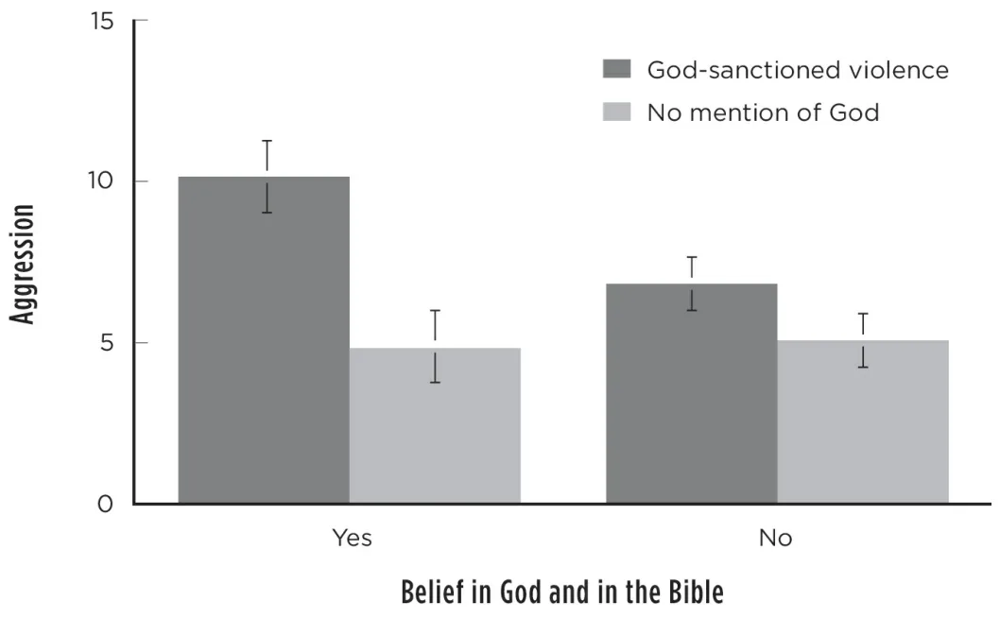
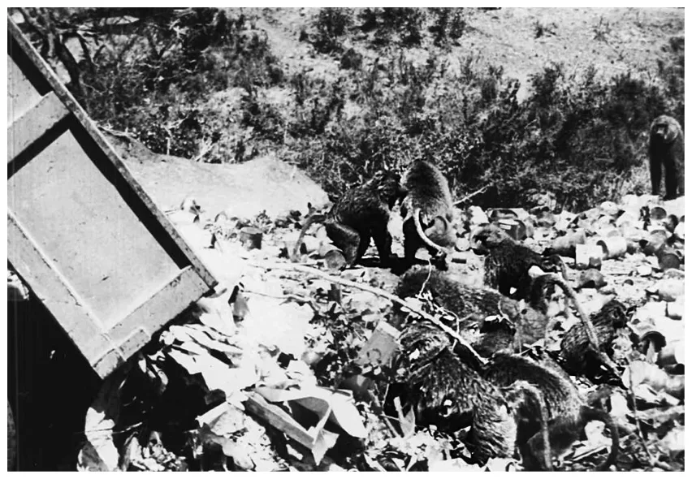
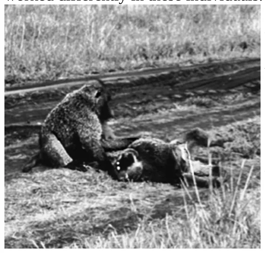
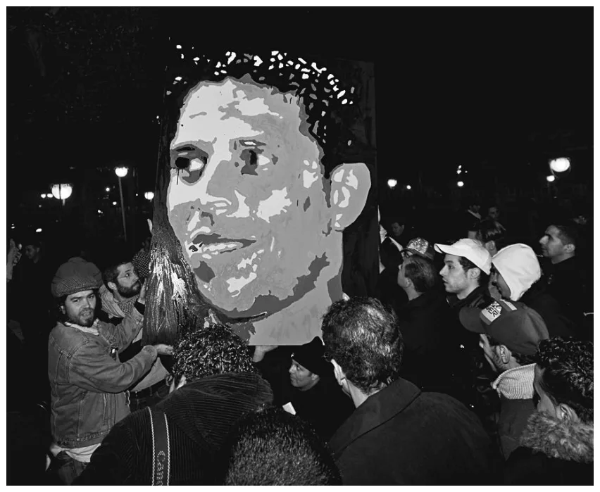
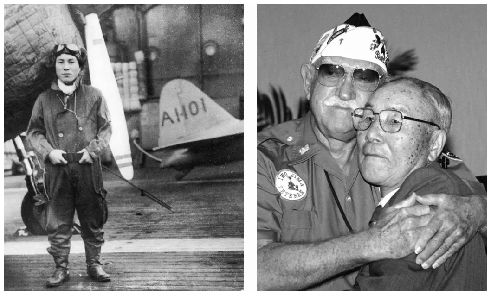
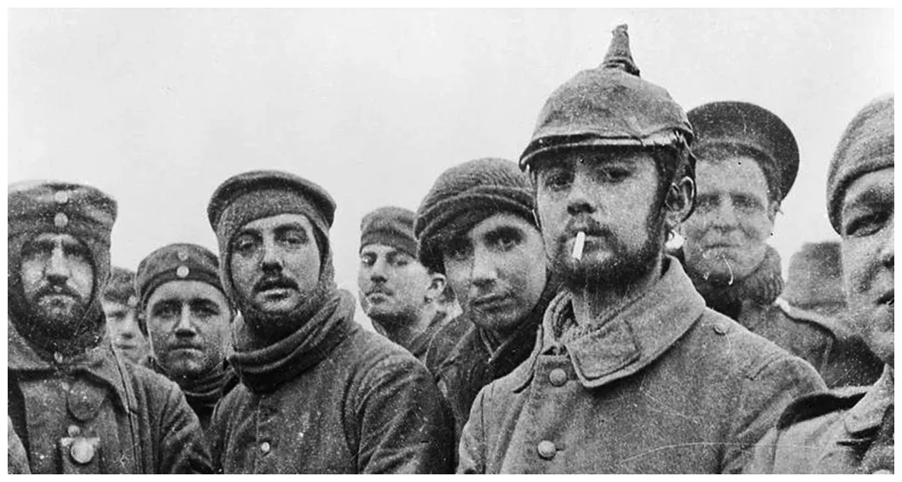
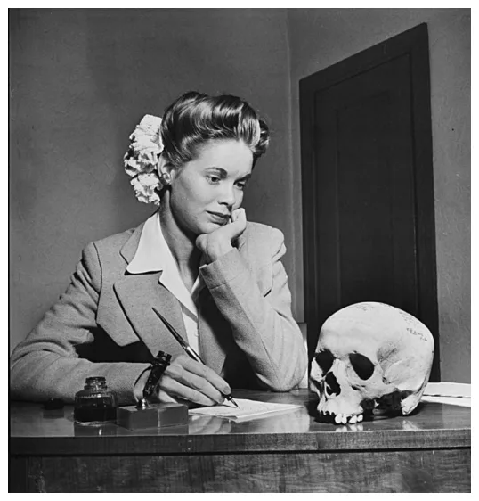
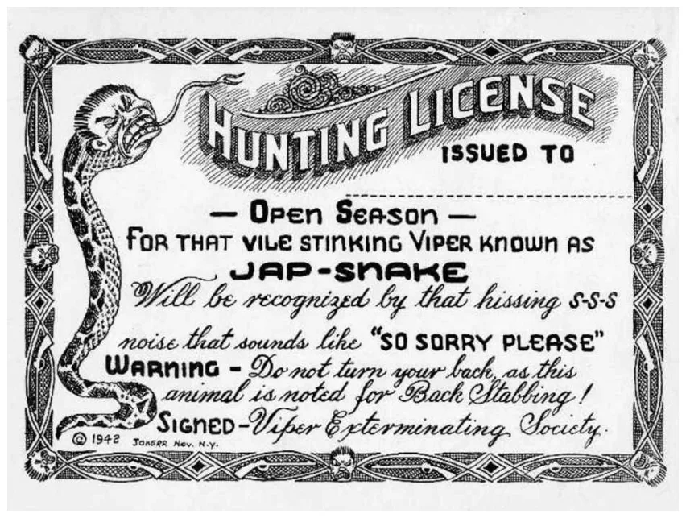

Chương 17 — Chiến tranh và Hòa bình
Mười bảy
Chiến tranh và Hòa bình
Hãy cùng điểm lại một số sự thật. Hạch hạnh nhân thường kích hoạt khi nhìn thấy khuôn mặt của một chủng tộc khác. Nếu bạn nghèo, đến năm năm tuổi, sự phát triển vỏ não trước trán của bạn có lẽ đã tụt lại sau mức trung bình. Oxytocin khiến chúng ta đối xử tệ bạc với người lạ. Sự đồng cảm không hẳn chuyển hóa thành hành động trắc ẩn, và sự phát triển đạo đức tinh tế cũng không hẳn chuyển hóa thành việc làm điều đúng đắn nhưng khó khăn hơn. Có những biến thể gen, trong những bối cảnh nhất định, khiến bạn dễ có hành vi chống đối xã hội. Và tinh tinh lùn bonobo không hề hoàn toàn ôn hòa—chúng sẽ chẳng phải là bậc thầy hòa giải nếu chúng không có xung đột để hòa giải.
Tất cả những điều này khiến người ta vô cùng bi quan. Tuy nhiên, lý do tồn tại của cuốn sách này là, dẫu vậy, vẫn có cơ sở cho sự lạc quan.
Do đó, mục tiêu của chương cuối cùng này là (a) chứng minh rằng mọi thứ đã được cải thiện, rằng nhiều hành vi tồi tệ nhất của chúng ta đang thoái trào, còn những hành vi tốt đẹp nhất đang trỗi dậy; (b) xem xét những cách để cải thiện điều này hơn nữa; (c) tìm kiếm sự nâng đỡ tinh thần cho công cuộc này, để thấy rằng những hành vi tốt đẹp nhất của chúng ta có thể xảy ra trong những hoàn cảnh khó tin nhất; (d) và cuối cùng, xem liệu tôi có thực sự thoát tội khi đặt tên chương này là “Chiến tranh và Hòa bình” hay không.
NHỮNG THIÊN THẦN TỐT ĐẸP HƠN ĐÔI CHÚT
Khi nói đến những hành vi tốt đẹp nhất và tồi tệ nhất của chúng ta, thế giới ngày nay khác một cách đáng kinh ngạc so với quá khứ không quá xa xôi. Vào buổi bình minh của thế kỷ XIX, chế độ nô lệ diễn ra trên toàn thế giới, bao gồm cả ở các thuộc địa của một châu Âu đang đắm mình trong Thời kỳ Khai sáng. Lao động trẻ em phổ biến khắp nơi và chẳng bao lâu sẽ đạt đến thời kỳ hoàng kim bóc lột cùng với Cách mạng Công nghiệp. Và không có một quốc gia nào trừng phạt hành vi ngược đãi động vật. Giờ đây mọi quốc gia đều đã đặt chế độ nô lệ ra ngoài vòng pháp luật, và hầu hết đều cố gắng thực thi điều đó; hầu hết đều có luật về lao động trẻ em, tỷ lệ lao động trẻ em đã giảm xuống, và ngày càng mang tính chất trẻ em làm việc cùng cha mẹ tại nhà; hầu hết các quốc gia đều có quy định về việc đối xử với động vật theo một cách nào đó.
Thế giới cũng an toàn hơn. Châu Âu thế kỷ XV có tỷ lệ trung bình 41 vụ giết người trên 100.000 dân mỗi năm. Hiện nay chỉ có El Salvador, Venezuela và Honduras, lần lượt ở mức 62, 64 và 85, là tệ hơn; mức trung bình của thế giới là 6,9, châu Âu là 1,4, và có những nước như Iceland, Nhật Bản và Singapore ở mức 0,3.
Dưới đây là những điều đã trở nên hiếm hoi hơn trong những thế kỷ gần đây: Cưỡng hôn, tảo hôn, cắt bỏ bộ phận sinh dục nữ, đánh đập vợ, đa thê, thiêu sống góa phụ. Bức hại người đồng tính, người động kinh, người bạch tạng. Đánh đập học sinh, đánh đập súc vật thồ hàng. Sự cai trị một vùng đất bởi quân đội chiếm đóng, bởi chúa đất thực dân, bởi kẻ độc tài không qua bầu cử. Mù chữ, tử vong ở trẻ sơ sinh, tử vong khi sinh nở, tử vong do các bệnh có thể phòng ngừa. Án tử hình.
Dưới đây là những thứ được phát minh trong thế kỷ qua: Lệnh cấm sử dụng một số loại vũ khí nhất định. Tòa án Thế giới và khái niệm tội ác chống lại loài người. Liên Hợp Quốc và việc điều động lực lượng gìn giữ hòa bình đa quốc gia. Các hiệp định quốc tế nhằm ngăn chặn nạn buôn bán kim cương máu, ngà voi, sừng tê giác, da báo và buôn người. Các cơ quan quyên góp tiền để cứu trợ nạn nhân thiên tai ở bất cứ đâu trên hành tinh, tạo điều kiện cho việc nhận con nuôi xuyên lục địa đối với trẻ mồ côi, chống lại các đại dịch toàn cầu và cử nhân viên y tế đến bất kỳ vùng xung đột nào.
Vâng, tôi biết, tôi sẽ là một kẻ ngây thơ hoàn toàn nếu nghĩ rằng luật pháp được thực thi phổ quát. Ví dụ, năm 1981 Mauritania trở thành quốc gia cuối cùng cấm chế độ nô lệ; tuy nhiên, ngày nay khoảng 20 phần trăm dân số nước này vẫn là nô lệ, và chính phủ chỉ mới truy tố tổng cộng một chủ nô.1 Tôi nhận thức rằng ở nhiều nơi mọi thứ chẳng thay đổi mấy; tôi đã dành hàng thập kỷ ở châu Phi sống quanh những người tin rằng người động kinh bị quỷ ám và nội tạng của người bạch tạng bị sát hại có năng lực chữa bệnh, nơi việc đánh đập vợ, con cái và động vật là chuyện bình thường, trẻ năm tuổi đi chăn gia súc và gánh củi, các bé gái dậy thì bị cắt âm vật và gả cho những ông già làm vợ ba. Dẫu vậy, trên toàn thế giới, mọi thứ đã được cải thiện.
Tác phẩm kinh điển bàn về điều này là cuốn sách đồ sộ của Pinker, The Better Angels of Our Nature: Why Violence Has Declined (Những thiên thần tốt đẹp hơn trong bản chất chúng ta: Vì sao bạo lực suy giảm).2 Đó là một công trình học thuật có sức thuyết phục đến thắt ruột trong việc ghi chép lại mọi thứ từng tồi tệ đến mức nào. Pinker mô tả sinh động sự tàn nhẫn khủng khiếp trong lịch sử của loài người. Khoảng nửa triệu người đã chết tại Đấu trường La Mã để mang lại cho hàng chục nghìn khán giả niềm khoái cảm khi xem tù binh bị cưỡng hiếp, phanh thây, tra tấn, bị thú dữ ăn thịt. Suốt thời Trung Cổ, các đạo quân càn quét khắp lục địa Á-Âu, tàn phá làng mạc, giết sạch đàn ông, đày mọi phụ nữ và trẻ em vào kiếp nô lệ. Giới quý tộc chiếm tỷ lệ bạo lực cao bất thường, hành hạ nông dân mà không bị trừng phạt. Các nhà chức trách tôn giáo và chính quyền, từ châu Âu đến Ba Tư, Trung Quốc, Ấn Độ giáo, Polynesia, Aztec, châu Phi và người Mỹ bản địa, đều sáng chế ra các công cụ tra tấn. Đối với một người dân Paris thế kỷ XVI đang buồn chán, trò tiêu khiển có thể là thiêu sống mèo, hành quyết một con vật “phạm tội”, hoặc trò chọi gấu, nơi một con gấu bị xích vào cột và bị bầy chó xé xác. Đó là một thế giới khác biệt đến buồn nôn; Pinker trích dẫn nhà văn L. P. Hartley: “Quá khứ là một đất nước xa lạ: người ta làm mọi thứ khác đi ở đó.”
Cuốn Better Angels đã khơi mào ba cuộc tranh cãi:
Tại sao ngày xưa con người lại tồi tệ đến thế?
Với Pinker câu trả lời rất rõ ràng. Bởi vì con người vốn dĩ luôn tồi tệ như vậy. Đây là cuộc tranh luận ở chương 9—chiến tranh được phát minh từ bao giờ, đời sống săn bắt-hái lượm thời tổ tiên giống với Hobbes hay Rousseau? Như chúng ta đã thấy, Pinker đứng về phe cho rằng bạo lực có tổ chức của con người có từ trước nền văn minh, kéo dài ngược về tổ tiên chung cuối cùng của chúng ta với tinh tinh. Và như đã điểm lại, hầu hết các chuyên gia đều không đồng tình một cách thuyết phục, cho rằng dữ liệu đã bị chọn lọc thiên lệch, các nhóm săn bắt-làm vườn bị gắn nhầm nhãn là săn bắt-hái lượm, và các nhóm săn bắt-hái lượm định cư kiểu mới bị gộp chung một cách thiếu phù hợp với các nhóm du mục truyền thống.
Tại sao con người lại trở nên đỡ tồi tệ hơn?
Câu trả lời của Pinker phản ánh hai yếu tố. Ông dựa vào nhà xã hội học Norbert Elias, người có khái niệm về “tiến trình văn minh hóa” tập trung vào thực tế rằng bạo lực suy giảm khi nhà nước độc quyền sử dụng vũ lực. Điều đó kết hợp với sự lan rộng của thương mại và giao thương, thúc đẩy sự tự kiềm chế mang tính thực dụng—nhận ra rằng để người kia sống và buôn bán với bạn thì tốt hơn. Phúc lợi của họ bắt đầu trở nên quan trọng, thúc đẩy cái mà Pinker gọi là “thang cuốn của lý trí”—một năng lực mở rộng cho sự đồng cảm và tính Chúng ta. Điều này làm nền tảng cho “cuộc cách mạng quyền”—dân quyền, quyền phụ nữ, quyền trẻ em, quyền người đồng tính, quyền động vật. Quan điểm này là một thắng lợi của nhận thức. Pinker gắn điều này với “hiệu ứng Flynn”, sự gia tăng IQ trung bình đã được ghi nhận rõ ràng trong thế kỷ qua; ông viện dẫn một hiệu ứng Flynn về đạo đức, khi trí thông minh gia tăng và sự tôn trọng lý trí thúc đẩy Thuyết Tâm trí và khả năng đặt mình vào vị trí người khác tốt hơn, cùng năng lực gia tăng trong việc trân trọng những lợi ích dài hạn của hòa bình. Theo lời một nhà phê bình, Pinker “không quá nhút nhát để gọi chính nền văn hóa của mình là văn minh.”3
Như dự đoán, điều này hứng chịu chỉ trích từ mọi phía. Phe Cánh tả cáo buộc rằng việc đề cao quá mức thời kỳ Khai sáng của những người đàn ông da trắng đã chết này tiếp tay cho chủ nghĩa tân đế quốc phương Tây.4 Bản năng chính trị cá nhân của tôi cũng nghiêng về hướng này. Tuy nhiên, phải thừa nhận rằng những quốc gia có mức độ bạo lực tối thiểu, mạng lưới an sinh xã hội rộng khắp, ít tảo hôn, nhiều nữ nghị sĩ và các quyền tự do dân sự bất khả xâm phạm thường là hậu duệ văn hóa trực tiếp của thời kỳ Khai sáng.
Trong khi đó, phe Cánh hữu cho rằng Pinker phớt lờ tôn giáo, giả vờ như sự tử tế được phát minh ra trong thời kỳ Khai sáng.5 Ông hùng hồn không hề hối lỗi về điều này—với ông, phần lớn những gì đã đi đúng hướng phản ánh việc con người “chuyển từ coi trọng linh hồn sang coi trọng mạng sống.” Với những người khác, lời chỉ trích là thang cuốn lý trí này sùng bái nhận thức hơn cảm xúc—xét cho cùng, những kẻ thái nhân cách có Thuyết Tâm trí rất tuyệt vời, một tâm trí thuần túy lý trí (do tổn thương não) đưa ra những phán xét đạo đức kinh tởm, và ý thức công lý được thúc đẩy bởi hạch hạnh nhân và vỏ não thùy đảo, chứ không phải dlPFC. Rõ ràng, sau ngần ấy trang sách, tôi cảm thấy sự tương tác giữa lý trí và cảm xúc mới là chìa khóa.
Liệu con người có thực sự trở nên đỡ tồi tệ hơn không?
Điều này gây tranh cãi rất gay gắt. Pinker đưa ra câu nói ấn tượng: “Chúng ta có lẽ đang sống trong kỷ nguyên hòa bình nhất trong lịch sử tồn tại của loài mình.” Sự thật thúc đẩy mạnh mẽ nhất cho sự lạc quan này là, ngoại trừ các cuộc chiến tranh Balkan, châu Âu đã hòa bình kể từ năm 1945, quãng thời gian dài nhất trong lịch sử. Với Pinker, “Nền Hòa bình Dài” (Long Peace) này đại diện cho việc phương Tây tỉnh ngộ sau sự tàn phá của Thế chiến II, thấy được lợi ích của việc trở thành một thị trường chung vượt trội hơn việc làm một lục địa chiến tranh triền miên, cộng thêm một chút đồng cảm mở rộng đi kèm.
Các nhà phê bình coi đây là chủ nghĩa dĩ Âu vi trung (lấy châu Âu làm trung tâm). Các nước phương Tây có thể hát bài hòa ca với nhau, nhưng họ chắc chắn đã gây chiến ở nơi khác—Pháp ở Đông Dương và Algeria, Anh ở Malaya và Kenya, Bồ Đào Nha ở Angola và Mozambique, Liên Xô ở Afghanistan, Hoa Kỳ ở Việt Nam, Triều Tiên và Mỹ Latinh. Hơn nữa, nhiều vùng thuộc thế giới đang phát triển đã liên tục chìm trong chiến tranh suốt nhiều thập kỷ—hãy nhìn miền đông Congo. Quan trọng nhất, những cuộc chiến đó trở nên đẫm máu hơn vì phương Tây phát minh ra ý tưởng để các quốc gia chư hầu đánh chiến tranh ủy nhiệm cho họ. Suy cho cùng, cuối thế kỷ XX đã chứng kiến Hoa Kỳ và Liên Xô vũ trang cho Somalia và Ethiopia đang đánh nhau, để rồi chỉ vài năm sau lại đổi sang vũ trang cho phe đối địch. Nền Hòa bình Dài chỉ dành cho người phương Tây.
Tuyên bố rằng bạo lực suy giảm đều đặn trong thiên niên kỷ qua cũng phải giải thích cho cả thế kỷ XX đẫm máu. Thế chiến II đã giết chết 55 triệu người, nhiều hơn bất kỳ cuộc xung đột nào trong lịch sử. Cộng thêm Thế chiến I, Stalin, Mao, cùng các cuộc nội chiến Nga và Trung Quốc, và bạn có tới 130 triệu người.
Pinker làm một điều hợp lý phản ánh tư cách nhà khoa học của ông. Ông hiệu chỉnh theo tổng quy mô dân số. Nhờ đó, dù Loạn An Lộc Sơn và nội chiến thời nhà Đường ở Trung Quốc thế kỷ VIII “chỉ” giết chết 36 triệu người, con số đó đại diện cho một phần sáu dân số thế giới—tương đương với 429 triệu người vào giữa thế kỷ XX. Khi số người chết được biểu thị bằng tỷ lệ phần trăm tổng dân số, Thế chiến II là sự kiện thế kỷ XX duy nhất lọt vào top 10, xếp sau Loạn An Lộc Sơn, các cuộc chinh phạt của Mông Cổ, nạn buôn nô lệ Trung Đông, sự sụp đổ của nhà Minh, sự sụp đổ của La Mã, những cái chết do Thiếp Mộc Nhi gây ra, cuộc tận diệt người Mỹ bản địa của người châu Âu, và nạn buôn nô lệ Đại Tây Dương.
Các nhà phê bình đặt nghi vấn về điều này—“Này, đừng dùng mấy hệ số bịp bợm để biến 55 triệu người chết trong Thế chiến II thành ít hơn 8 triệu người chết khi La Mã sụp đổ chứ.” Xét cho cùng, vụ sát hại ngày 11/9 sẽ chẳng gợi lên nỗi kinh hoàng chỉ bằng một nửa nếu nước Mỹ có 600 triệu dân thay vì 300 triệu dân. Nhưng phân tích của Pinker là phù hợp, và việc phân tích tỷ lệ các sự kiện là cách bạn phát hiện ra rằng London ngày nay an toàn hơn nhiều so với thời Dickens, hoặc một số nhóm săn bắt-hái lượm có tỷ lệ giết người ngang ngửa Detroit.
Nhưng Pinker đã không đi thêm một bước logic nữa—đó là hiệu chỉnh cả thời lượng khác nhau của các sự kiện. Do đó ông so sánh khoảng nửa tá năm của Thế chiến II với, chẳng hạn, mười hai thế kỷ của nạn buôn nô lệ Trung Đông và bốn thế kỷ diệt chủng người Mỹ bản địa. Khi hiệu chỉnh theo cả thời lượng lẫn tổng dân số thế giới, top 10 lúc này bao gồm Thế chiến II (hạng nhất), Thế chiến I (hạng ba), Nội chiến Nga (hạng tám), Mao (hạng mười), và một sự kiện thậm chí không có trong danh sách ban đầu của Pinker, cuộc diệt chủng Rwanda (hạng bảy), nơi 700.000 người bị giết chỉ trong một trăm ngày.*
Điều này gợi ra cả tin tốt lẫn tin xấu. So với quá khứ, chúng ta khác biệt phi thường về đối tượng mà ta mở rộng quyền và cảm thấy đồng cảm, cũng như những tệ nạn toàn cầu mà ta chống lại. Và mọi thứ tốt hơn xét về việc ít người hành động bạo lực hơn và các xã hội đang nỗ lực kiềm chế họ. Nhưng tin xấu là tầm với của số ít kẻ bạo lực ngày càng lớn hơn. Họ không chỉ nổi giận về các sự kiện ở lục địa khác—họ bay tới đó và gây thảm họa. Những kẻ bạo lực có sức hút truyền cảm hứng cho hàng nghìn người trong các phòng chat thay vì một đám đông ở làng họ. Những con sói đơn độc cùng chí hướng dễ dàng gặp gỡ và di căn hơn. Và sự hỗn loạn từng được tung ra bằng dùi cui hay dao rựa nay diễn ra bằng súng tự động hay bom, với hậu quả kinh hoàng hơn gấp bội. Mọi thứ đã được cải thiện. Nhưng điều đó không có nghĩa là chúng đã tốt đẹp.
Vì vậy bây giờ chúng ta hãy xem xét những hiểu biết sâu sắc mà cuốn sách này cung cấp có thể giúp ích được gì.
MỘT SỐ CON ĐƯỜNG TRUYỀN THỐNG
Đầu tiên là chiến lược giảm thiểu bạo lực đã kéo dài hàng chục nghìn năm—di chuyển. Nếu hai cá nhân trong một nhóm săn bắt-hái lượm có căng thẳng, một người thường chuyển sang nhóm láng giềng, đôi khi tự nguyện, đôi khi không. Tương tự, căng thẳng giữa các nhóm được giảm bớt khi một nhóm chuyển đến địa điểm khác, một lợi thế của lối sống du mục. Một nghiên cứu gần đây về người Hadza săn bắt-hái lượm ở Tanzania cho thấy một lợi ích bổ sung từ tính linh hoạt này, đúng như những gì ở chương 10. Cụ thể, nó tạo điều kiện cho những cá nhân có tính hợp tác cao kết giao với nhau.6
Tiếp theo là những tác động tích cực của thương mại, như các nhà nhân học cũng như Pinker nhấn mạnh. Từ việc buôn bán ở chợ làng đến ký kết các hiệp định thương mại quốc tế, thường đúng rằng nơi nào hàng hóa không đi qua biên giới, quân đội sẽ đi qua. Đó là một phiên bản của Lý thuyết Vòm Vàng (Golden Arches Theory) về hòa bình hơi mang tính châm biếm của Thomas Friedman—những quốc gia có McDonald’s không đánh nhau. Dù có những ngoại lệ (ví dụ: Mỹ xâm lược Panama, Israel xâm lược Lebanon), luận điểm rộng lớn của Friedman vẫn đúng—những quốc gia đủ ổn định để hội nhập vào thị trường toàn cầu với những thương hiệu như McDonald’s và đủ thịnh vượng để người dân giữ cho các cơ sở đó làm ăn phát đạt có khả năng kết luận rằng lợi ích thương mại của hòa bình lớn hơn chiến lợi phẩm tưởng tượng của chiến tranh.**7
Điều này không chắc chắn tuyệt đối—ví dụ, dù là đối tác thương mại lớn của nhau, Đức và Anh vẫn đánh nhau trong Thế chiến I—và chẳng thiếu người sẵn sàng gây chiến, ngay cả với cái giá là giao thương gián đoạn và hàng hóa khan hiếm. Hơn nữa, “thương mại” là con dao hai lưỡi. Nó chắc chắn rất tuyệt vời khi diễn ra giữa những người thợ săn bản địa trong rừng mưa; nó chắc chắn đáng ghét nếu bạn đang biểu tình phản đối WTO. Nhưng chừng nào các quốc gia còn có thể gây chiến với những nước ở xa, thương mại đường dài khiến họ phụ thuộc lẫn nhau vẫn là một yếu tố răn đe tốt.
Sự lan tỏa văn hóa nói chung (bao gồm cả thương mại) cũng có thể tạo điều kiện cho hòa bình. Điều này có thể mang sắc thái hiện đại—trên 189 quốc gia, khả năng tiếp cận kỹ thuật số dự báo sự gia tăng các quyền tự do dân sự và tự do truyền thông. Hơn nữa, nước láng giềng càng có nhiều quyền tự do dân sự thì hiệu ứng này càng mạnh, vì ý tưởng chảy theo hàng hóa.8
Tôn giáo
Chà, tôi rất muốn bỏ qua phần này, nhưng không thể. Đó là bởi vì tôn giáo có thể coi là phát minh văn hóa định hình chúng ta rõ nét nhất, một chất xúc tác cực kỳ mạnh mẽ cho cả những hành vi tốt đẹp nhất lẫn tồi tệ nhất của chúng ta.
Khi giới thiệu tuyến yên ở chương 4, tôi không cảm thấy buộc phải bộc bạch trước cảm xúc của mình về cái tuyến đó. Nhưng điều tương tự lại có vẻ phù hợp ở đây. Vậy nên: Tôi được nuôi dạy rất ngoan đạo theo Chính thống giáo Do Thái, từng cảm thấy sùng đạo mãnh liệt. Nhưng rồi, vào khoảng năm mười ba tuổi, toàn bộ tòa lâu đài đó sụp đổ; kể từ đó, tôi không còn khả năng có bất kỳ lòng sùng đạo hay tâm linh nào và dễ dàng tập trung vào những khía cạnh hủy hoại của tôn giáo hơn là khía cạnh có lợi. Nhưng tôi thích ở gần những người theo đạo và cảm động trước họ—trong khi vẫn bối rối không hiểu làm sao họ có thể tin vào những thứ đó. Và tôi thiết tha ước mình có thể tin được. Hết.
Như đã nhấn mạnh ở chương 9, chúng ta đã tạo ra một sự đa dạng tôn giáo đến choáng ngợp. Khi chỉ xét những tôn giáo có tầm ảnh hưởng toàn cầu, có một số điểm chung quan trọng:
a. Tất cả đều bao gồm những khía cạnh sùng đạo mang tính cá nhân sâu sắc, đơn độc và cá thể hóa, cũng như những khía cạnh thuộc về cộng đồng; như chúng ta sẽ thấy, đây là những địa hạt rất khác nhau khi nói đến việc nuôi dưỡng những hành vi tốt đẹp nhất và tồi tệ nhất của chúng ta. b. Tất cả đều bao gồm những hành vi nghi lễ cá nhân và cộng đồng giúp xoa dịu trong lúc lo âu; tuy nhiên, nhiều nỗi lo âu đó lại do chính tôn giáo tạo ra.
Tác dụng giảm lo âu của đức tin là hợp lý, xét việc căng thẳng tâm lý bắt nguồn từ sự thiếu kiểm soát, thiếu khả năng dự đoán, thiếu lối thoát và thiếu hỗ trợ xã hội. Tùy thuộc vào tôn giáo, đức tin mang lại lời giải thích cho lý do mọi thứ xảy ra, niềm xác tín rằng có một mục đích, và cảm giác về một đấng sáng tạo quan tâm đến chúng ta, nhân từ, đáp lại lời khẩn cầu của con người, ưu tiên đáp lại lời khẩn cầu từ những người giống như bạn. Chẳng có gì ngạc nhiên khi lòng sùng đạo mang lại lợi ích sức khỏe (độc lập với sự hỗ trợ cộng đồng mà nó mang lại và tỷ lệ lạm dụng chất kích thích thấp hơn).
Hãy nhớ lại vai trò của vỏ não vành trước (ACC) trong việc gióng lên hồi chuông báo động khi có sự sai lệch giữa cách bạn nghĩ mọi thứ vận hành và cách chúng thực sự diễn ra. Sau khi kiểm soát các yếu tố tính cách và năng lực nhận thức, những người sùng đạo hơn cho thấy mức kích hoạt ACC thấp hơn khi nhận tin về một sự sai lệch tiêu cực. Các nghiên cứu khác cũng cho thấy tác dụng giảm lo âu của các nghi lễ tôn giáo lặp đi lặp lại.9 c. Cuối cùng, mọi tôn giáo lớn trên thế giới đều phân biệt giữa Chúng ta và
Họ, dù chúng khác nhau về điều kiện để trở thành một Chúng ta và liệu những thuộc tính liên quan đó có bất biến hay không.
Chúng ta đã biết đủ về sinh học thần kinh của lòng sùng đạo đến mức thậm chí có một tạp chí mang tên Religion, Brain and Behavior (Tôn giáo, Não bộ và Hành vi). Việc đọc một lời cầu nguyện quen thuộc kích hoạt hệ thống dopaminergic trung não-hệ viền. Việc ứng tác một lời cầu nguyện kích hoạt các vùng liên quan đến Thuyết Tâm trí, khi bạn cố gắng hiểu góc nhìn của một vị thần (“Chúa muốn mình khiêm nhường bên cạnh lòng biết ơn; tốt hơn hết mình nên nhớ nhắc đến điều đó”). Hơn nữa, mức độ kích hoạt cao hơn của mạng lưới Thuyết Tâm trí này tương quan với một hình ảnh nhân cách hóa hơn về vị thần. Tin rằng ai đó đang chữa bệnh bằng đức tin sẽ làm giảm hoạt động của dlPFC (thuộc nhận thức), tạm gác sự hoài nghi. Và việc thực hiện một nghi lễ quen thuộc kích hoạt các vùng vỏ não liên quan đến thói quen và đánh giá phản xạ.10
Vậy người theo đạo có tử tế hơn người không theo đạo không? Điều đó tùy thuộc vào việc họ đang tương tác với thành viên trong nhóm hay ngoài nhóm. Được rồi, vậy người theo đạo có tử tế hơn với thành viên trong nhóm không? Vô số nghiên cứu nói có—tham gia tình nguyện nhiều hơn (có hoặc không có bối cảnh tôn giáo), quyên góp từ thiện, và hành vi thân thiện xã hội tự phát nhiều hơn, hào phóng, tin tưởng, trung thực và tha thứ hơn trong các trò chơi kinh tế. Tuy nhiên, cũng có vô số nghiên cứu cho thấy không có sự khác biệt.11
Tại sao lại có sự mâu thuẫn này? Trước hết, vấn đề nằm ở việc dữ liệu có phải do tự báo cáo hay không—người theo đạo có xu hướng thổi phồng báo cáo về tính thân thiện xã hội của mình nhiều hơn người không theo đạo. Một yếu tố khác là liệu hành vi thân thiện xã hội đó có diễn ra công khai hay không—sự phô trương lộ liễu đặc biệt quan trọng đối với những tín đồ có nhu cầu cao về sự tán thành của xã hội. Thêm một sự phụ thuộc vào bối cảnh nữa: trong một nghiên cứu, người theo đạo hào phóng hơn người không theo đạo—nhưng chỉ vào ngày Sa-bát của họ.12
Một vấn đề quan trọng khác: loại tôn giáo nào? Như đã giới thiệu ở chương 9, Ara Norenzayan, Azim Shariff và Joseph Henrich thuộc Đại học British Columbia đã xác định mối liên hệ giữa các đặc điểm của nhiều tôn giáo khác nhau và các khía cạnh của tính thân thiện xã hội.13 Như ta đã thấy, các nền văn hóa nhóm nhỏ (như săn bắt-hái lượm) hiếm khi sáng tạo ra các vị thần phán xét đạo đức. Chỉ đến khi các nền văn hóa đủ lớn để con người thường xuyên tương tác ẩn danh với người lạ thì việc sáng tạo ra một vị thần hay phán xét—vị thần của Do Thái giáo-Kitô giáo/Hồi giáo—mới trở nên phổ biến.
Trong những nền văn hóa như vậy, các tín hiệu tôn giáo công khai và tiềm thức đều thúc đẩy tính thân thiện xã hội. Trong một nghiên cứu, các đối tượng theo đạo sắp xếp lại các câu xáo trộn có hoặc không có chứa từ ngữ tôn giáo (ví dụ: linh hồn, thiêng liêng, thần thánh); làm việc đầu tiên đã thúc đẩy sự hào phóng ngay sau đó. Điều này gợi nhớ đến phát hiện ở chương 3 rằng chỉ cần nhìn thấy một đôi mắt dán trên tường cũng khiến con người hành xử thân thiện xã hội hơn. Và để chứng tỏ điều này là về việc bị giám sát, việc sắp xếp các câu với những từ thế tục như “bồi thẩm đoàn”, “cảnh sát” hay “hợp đồng” cũng tạo ra hiệu ứng tương tự.14
Như vậy, những lời nhắc nhở về (các) vị thần phán xét giúp thúc đẩy tính thân thiện xã hội. Việc vị thần đó làm gì trước những hành vi phạm lỗi cũng rất quan trọng. Trong nội bộ từng nền văn hóa và giữa các nền văn hóa, vị thần càng hay trừng phạt thì sự hào phóng dành cho một người đồng đạo ẩn danh càng lớn. Các vị thần hay trừng phạt có tạo ra những con người hay trừng phạt hơn không (ít nhất là trong trò chơi kinh tế)? Trong một nghiên cứu, không—cứ giữ lấy tiền của bạn, Chúa đã lo liệu chuyện trừng phạt rồi. Trong một nghiên cứu khác, có—một vị thần hay trừng phạt cũng sẽ muốn tôi trừng phạt kẻ khác. Nhóm nghiên cứu tại UBC đã chỉ ra một điều trớ trêu. Mồi nhận thức để mọi người nghĩ về Chúa như một đấng trừng phạt làm giảm gian lận; nghĩ về Chúa như một đấng tha thứ lại làm tăng gian lận. Sau đó các nhà nghiên cứu khảo sát đối tượng từ sáu mươi bảy quốc gia, xem xét mức độ phổ biến của niềm tin vào sự tồn tại của thiên đường và địa ngục ở mỗi nước. Niềm tin càng nghiêng về địa ngục, thay vì thiên đường, thì tỷ lệ tội phạm quốc gia càng thấp. Khi nói đến Cõi Vĩnh hằng, cây gậy dường như hiệu quả hơn củ cà rốt.
Thế còn việc tôn giáo tạo điều kiện cho những điều tồi tệ nhất ở chúng ta, đối với phe Họ thì sao? Chà, một bằng chứng cho điều này là, ừm, kiểu như, lịch sử nhân loại vậy. Mọi tôn giáo lớn đều có máu lịch sử dính trên tay—các nhà sư Phật giáo đã dẫn đầu cuộc bức hại người Hồi giáo Rohingya ở Miến Điện, và một tín đồ Quaker trong Nhà Trắng đã chỉ đạo cuộc ném bom rải thảm miền Bắc Việt Nam vào dịp Giáng sinh.*15 Điều này trải dài từ các cuộc chiến tranh tôn giáo—vốn là, trích một câu nói thường được gán cho Napoleon, “con người giết nhau xem ai có người bạn tưởng tượng xịn hơn”—cho đến các cuộc chiến thế tục mà dẫu vậy, sự ủng hộ của đấng toàn năng vẫn được cầu xin và tuyên bố. Tôn giáo là một chất xúc tác đặc biệt ngoan cường của bạo lực. Người Công giáo và Tin Lành đã giết nhau ở châu Âu suốt gần 500 năm, người Shia và Sunni suốt 1.300 năm. Những bất đồng bạo lực về các mô hình kinh tế hay chính phủ khác nhau không bao giờ kéo dài lâu đến thế—chuyện này giống như ngày nay người ta vẫn giết nhau vì, chẳng hạn, quyết định năm 610 của Hoàng đế Đông La Mã Heraclius chuyển ngôn ngữ chính thức từ tiếng Latinh sang tiếng Hy Lạp. Như được chỉ ra trong một nghiên cứu về sáu trăm nhóm khủng bố kéo dài bốn mươi năm, chủ nghĩa khủng bố dựa trên tôn giáo tồn tại dai dẳng nhất và ít có khả năng lắng xuống nhất do các chiến binh tham gia tiến trình chính trị.
Các tín hiệu mồi tôn giáo nuôi dưỡng sự thù địch với nhóm ngoài. Trong một “nghiên cứu thực địa” nơi mọi người được khảo sát tại các địa điểm khác nhau ở một thành phố châu Âu đa văn hóa, chỉ cần đi bộ ngang qua một nhà thờ cũng khiến người theo đạo Cơ đốc bày tỏ thái độ bảo thủ, tiêu cực hơn đối với người không theo đạo Cơ đốc. Một nghiên cứu khác xem xét tác động mồi của một vị thần bạo lực. Các đối tượng đọc một đoạn Kinh Thánh kể về một người phụ nữ bị đám đông từ bộ tộc khác sát hại. Chồng cô bàn bạc với người trong bộ tộc và lập ra một đội quân trả thù bằng cách tấn công bộ tộc kia (theo kiểu Kinh Thánh, phá hủy thành phố của họ và giết sạch mọi người lẫn gia súc). Một nửa số đối tượng được nghe câu chuyện này. Trong câu chuyện kể cho nửa còn lại, khi đang cân nhắc trả thù, đội quân xin lời khuyên từ Chúa, và Ngài chuẩn y cho họ trừng phạt nặng nề bộ tộc kia.16

Truy cập bit.ly/2mNNLLf để xem phiên bản lớn hơn của biểu đồ này.
Sau đó những người tham gia chơi một trò chơi đối kháng, trong đó người thua mỗi vòng sẽ bị dội một tiếng ồn lớn ở mức âm lượng do người chơi kia chọn. Việc đọc cảnh Chúa chuẩn y cho khát khao bạo lực của họ đã làm tăng mức âm lượng dùng để trừng phạt đối thủ.
Không ngạc nhiên: hiệu ứng ở nam giới lớn hơn nữ giới. Ngạc nhiên lớn: các đối tượng hoặc là tín đồ Mặc Môn sùng đạo tại Đại học Brigham Young hoặc là sinh viên thuộc các tôn giáo thường mang tính tự do tại một trường đại học Hà Lan, và hiệu ứng mạnh ngang nhau ở cả hai nhóm. Ngạc nhiên lớn nhất: ngay cả ở những đối tượng không tin theo Kinh Thánh (1 phần trăm cao bất ngờ trong số sinh viên Brigham Young và 73 phần trăm ở nhóm Hà Lan), sự chuẩn y của thần thánh vẫn làm tăng tính hung hăng của họ (dù ở mức độ thấp hơn). Như vậy, sự chuẩn y bạo lực của thần thánh có thể làm tăng tính hung hăng ngay cả ở những người mà lòng sùng đạo có lẽ không bao gồm một vị thần báo thù, cũng như ở những người thậm chí không tin có bất kỳ thần linh nào.
Tất nhiên, đây không phải là tác động đồng nhất của tôn giáo; Norenzayan phân biệt giữa lòng sùng đạo cá nhân và cộng đồng khi khảo sát sự ủng hộ đối với những kẻ đánh bom tự sát ở người Palestine.17 Trong một sự bác bỏ thói ngu xuẩn kiểu “Hồi giáo = khủng bố”, lòng sùng đạo cá nhân của mọi người (được đánh giá qua tần suất cầu nguyện) không dự báo sự ủng hộ khủng bố. Tuy nhiên, việc thường xuyên đến dự lễ tại nhà thờ Hồi giáo thì có. Sau đó tác giả thăm dò ý kiến người Ấn Độ giáo ở Ấn Độ, tín đồ Chính thống giáo Nga, người Do Thái ở Israel, người Hồi giáo Indonesia, người Tin Lành Anh và người Công giáo Mexico về việc liệu họ có sẵn sàng chết vì tôn giáo của mình không và liệu những người theo tôn giáo khác có gây ra rắc rối cho thế giới không. Trong mọi trường hợp, việc thường xuyên tham dự các buổi lễ tôn giáo, chứ không phải việc cầu nguyện thường xuyên, mới dự báo những quan điểm đó. Không phải lòng sùng đạo kích động sự thù địch liên nhóm; mà là việc được bao quanh bởi những người đồng đạo cùng khẳng định bản sắc cục bộ, sự cam kết, và những yêu ghét chung. Điều này cực kỳ quan trọng.
— Ta nên rút ra điều gì từ những phát hiện đa dạng này? Lòng sùng đạo sẽ chẳng biến mất đâu.* Xét điều đó, dường như việc thúc đẩy tính xã hội trong nhóm được thực hiện tốt nhất với một vị thần phán xét đạo đức và hay trừng phạt. Lời chỉ trích quen thuộc, nhàm chán đối với chủ nghĩa vô thần là việc thiếu vắng thần linh sẽ tạo ra sự vô luân hư vô; lời đáp trả quen thuộc là thật chẳng có gì ấn tượng nếu bạn chỉ tử tế vì sợ bị đày xuống địa ngục. Ấn tượng hay không, điều đó dường như vẫn có ích. Thách thức lớn là khi các khía cạnh cộng đồng của lòng sùng đạo nuôi dưỡng sự thù địch với nhóm ngoài. Thật vô ích khi kêu gọi các tôn giáo mở rộng phạm vi tính Chúng ta của họ. Các tôn giáo rất kỳ quặc về việc ai là Chúng ta, trải dài từ “chỉ những người trông giống, hành động, nói năng và cầu nguyện giống người trong giáo phái của chúng ta” đến “tất cả mọi sự sống.” Sẽ cực kỳ khó khăn để dịch chuyển các tôn giáo từ thái cực trước sang thái cực sau.
Tiếp xúc
Như đã giới thiệu ở chương 11, nhiều người suy đoán rằng căng thẳng liên nhóm sẽ giảm bớt nhờ tiếp xúc—khi mọi người hiểu nhau hơn, ai nấy đều hòa thuận. Nhưng bất chấp khả năng tốt đẹp đó, sự tiếp xúc liên nhóm rất dễ làm gia tăng thù địch.18
Như đã thấy ở chương 9, sự tiếp xúc liên nhóm làm mọi thứ tồi tệ hơn khi hai nhóm bị đối xử bất bình đẳng hoặc có số lượng chênh lệch; khi nhóm nhỏ hơn bị bao vây; khi ranh giới liên nhóm mơ hồ; khi các nhóm tranh giành việc phô trương biểu tượng các giá trị thiêng liêng của mình (ví dụ: người Tin Lành Bắc Ireland
tuần hành với cờ của Hội Orange xuyên qua các khu dân cư Công giáo). Va chạm đến trầy da tróc vảy.
Rõ ràng, điều ngược lại là cần thiết để giảm thiểu mối đe dọa và lo âu—các nhóm gặp gỡ nhau với số lượng và sự đối xử bình đẳng, trong một bối cảnh trung lập không có tuyên truyền kích động và có sự giám sát thể chế đối với hoạt động đó. Quan trọng nhất, các tương tác hiệu quả nhất khi có một mục tiêu chung, đặc biệt là khi nó thành công. Điều này quay lại chương 11—một mục tiêu chung tái sắp xếp thứ tự ưu tiên của sự phân đôi Chúng ta/Họ, đưa cái Chúng ta kết hợp mới mẻ này lên hàng đầu.
Trong những điều kiện đó, sự tiếp xúc liên nhóm bền vững nhìn chung làm giảm định kiến, thường ở mức độ lớn và theo cách khái quát, lâu dài. Đây là kết luận của một phân tích tổng hợp năm 2006 trên khoảng năm trăm nghiên cứu bao gồm hơn 250.000 đối tượng từ ba mươi tám quốc gia; tác động tích cực gần như tương đương đối với sự khác biệt nhóm về chủng tộc, tôn giáo, sắc tộc hay xu hướng tính dục. Ví dụ, một nghiên cứu năm 1957 về việc xóa bỏ phân biệt chủng tộc trong Đội tàu Thương mại cho thấy các thủy thủ da trắng càng đi nhiều chuyến cùng người Mỹ gốc Phi thì thái độ chủng tộc của họ càng tích cực. Tương tự đối với cảnh sát da trắng tính theo thời gian làm việc cùng đồng nghiệp người Mỹ gốc Phi.19
Một phân tích tổng hợp gần đây hơn cung cấp thêm những hiểu biết sâu sắc: (a) Các tác động tích cực thường bao gồm cả việc có thêm kiến thức lẫn thêm sự đồng cảm dành cho phe Họ. (b) Nơi làm việc là một địa điểm đặc biệt hiệu quả để sự tiếp xúc phát huy tác dụng tốt đẹp. Việc giảm định kiến về phe Họ tại nơi làm việc thường lan tỏa ra phe Họ nói chung, và thậm chí đôi khi sang các kiểu phe Họ khác. (c) Sự tiếp xúc giữa một nhóm thống trị truyền thống và một nhóm thiểu số yếu thế thường làm giảm định kiến nhiều hơn ở nhóm đầu; nhóm sau có ngưỡng cao hơn. (d) Những con đường tương tác mới mẻ—chẳng hạn như các mối quan hệ trực tuyến bền vững—cũng có thể phát huy tác dụng đôi chút.20
Toàn tin tốt lành. Lý thuyết tiếp xúc đã thúc đẩy một cách tiếp cận thực nghiệm, trong đó mọi người, thường là thanh thiếu niên hoặc người trẻ tuổi, từ các nhóm đang xung đột được đưa lại gần nhau trong bất kỳ hoạt động nào từ các buổi thảo luận một giờ đến các trại hè. Chúng thường xuyên liên quan đến người Palestine và người Israel, người Công giáo và Tin Lành Bắc Ireland, hoặc các nhóm đối địch từ vùng Balkan, Rwanda hay Sri Lanka, với ý tưởng rằng những người tham gia sẽ trở về nhà và lan tỏa sự thay đổi thái độ của mình. Ý niệm gieo mầm này đã gợi nên tên gọi của một chương trình như vậy: Seeds of Peace (Những hạt giống Hòa bình).
Những bức ảnh tập thể cho thấy người Hồi giáo và Do Thái, người Công giáo và Tin Lành, người Tutsi và Hutu, người Croatia và Bosnia khoác vai nhau; cảnh này còn đáng yêu hơn cả cún con. Các chương trình đó có hiệu quả không? Tùy vào việc thế nào được coi là “hiệu quả”. Theo một chuyên gia, Stephen Worchel thuộc Đại học Hawaii, các tác động nhìn chung là tích cực—ít sợ hãi hơn và có cái nhìn tích cực hơn về phe Họ, nhận thức nhiều hơn về phe Họ như một tập thể đa dạng, thừa nhận nhiều hơn những khuyết điểm của phe Chúng ta, và nhận thức nhiều hơn về bản thân như một Chúng ta không điển hình.
Đó là dư âm ngay sau đó. Đáng thất vọng là những tác động này thường thoáng qua. Các cá nhân ở hai bên chiến tuyến hiếm khi giữ liên lạc; trong một khảo sát về thanh thiếu niên Palestine và Israel, 91 phần trăm đã không liên lạc nữa. Sự sụt giảm định kiến lâu dài thường mang tính ngoại lệ hóa—“Ừ, hầu hết bọn Họ đều kinh khủng, nhưng tôi từng chơi với một người phe Họ cũng ổn lắm.” Khi có sự chuyển hóa lớn, người cải đạo rao giảng hòa bình sẽ mất uy tín ở quê nhà khi họ phát tán điều này. Ví dụ, chưa có nhà hoạt động hòa bình nổi bật nào bước ra từ hàng nghìn người tham gia chương trình Seeds of Peace ở Trung Đông.*
Có một cách nghĩ về sự tiếp xúc như sau: thay vì căm ghét một kẻ thuộc phe Họ vì những gì tổ tiên hắn đã làm, bạn chờ đợi đến ngày bạn bực mình với hắn vì, chẳng hạn, ăn mất miếng bánh s’more cuối cùng, hoặc chỉnh máy điều hòa văn phòng quá thấp, hoặc không bao giờ cất đúng chỗ trong kho cái lưỡi cày vốn từng là thanh gươm. Đấy mới là tiến bộ. Cốt lõi của suy nghĩ đó là minh chứng của Susan Fiske rằng phản ứng tự động của hạch hạnh nhân trước khuôn mặt khác chủng tộc có thể bị hóa giải khi đối tượng nghĩ về khuôn mặt đó như thuộc về một con người, chứ không phải một kẻ phe Họ. Khả năng cá thể hóa ngay cả những con quái vật nguyên khối và bị phi cá thể hóa có thể thật phi thường.
Một ví dụ cảm động về điều này được kể bởi Pumla Gobodo-Madikizela trong cuốn sách A Human Being Died That Night: A South African Story of Forgiveness (Một con người đã chết đêm đó: Câu chuyện Nam Phi về sự tha thứ, Cape Town: David Philip, 2003). Gobodo-Madikizela, lớn lên tại một khu ổ chuột người da đen ở Nam Phi thời apartheid, đã tự vươn lên trên con đường học vấn cho đến tận bằng Tiến sĩ tâm lý học lâm sàng. Khi một Nam Phi tự do ló rạng, bà làm việc cho Ủy ban Sự thật và Hòa giải, nơi bà nhận một nhiệm vụ khiến bất kỳ ai cũng phải chùn bước. Nhiệm vụ đó liên quan đến Eugene de Kock, người có bàn tay vấy máu theo đúng nghĩa đen nhất của chế độ apartheid. De Kock từng chỉ huy đơn vị chống nổi dậy tinh nhuệ của Cảnh sát Nam Phi và trực tiếp giám sát các vụ bắt cóc, tra tấn và sát hại các nhà hoạt động da đen. Hắn đã bị xét xử, kết án và lĩnh án tù chung thân. Gobodo-Madikizela được giao phỏng vấn hắn về đội tử thần của hắn; với tư cách một nhà tâm lý học lâm sàng, qua hơn bốn mươi giờ trò chuyện với hắn, trọng tâm chính của bà trở thành việc thấu hiểu con người này.
Hắn hóa ra là một con người thực thụ đa diện, đầy mâu thuẫn như có thể đoán trước, chứ không phải một nguyên mẫu. Hắn hối hận ở một số mặt, không ăn năn ở những mặt khác; thờ ơ trước một số hành động tàn bạo kinh hoàng của mình trong khi lại tự hào về mớ nguyên tắc chắp vá của bản thân về việc không giết ai; hắn chỉ trích các cấp trên của mình (những kẻ hầu hết thoát tội bằng cách khắc họa hắn như một tên côn đồ tự phát chứ không phải công chức của chế độ apartheid như thực tế) trong khi nhấn mạnh quyền chỉ huy của mình đối với đám sát thủ. Hắn khiến bà sụp đổ khi rụt rè hỏi liệu hắn có giết người thân nào của bà không (hắn không giết).
Và Gobodo-Madikizela nhận thấy bản thân vô cùng bối rối trước sự đồng cảm ngày càng lớn của mình dành cho de Kock.
Một khoảnh khắc bước ngoặt đến vào một ngày khi de Kock đang kể lại điều gì đó khiến hắn đau khổ rõ rệt. Gobodo-Madikizela theo phản xạ đưa tay ra và—một hành động cấm kỵ—chạm vào ngón tay hắn qua song sắt nhà tù. Sáng hôm sau cánh tay bà nặng trĩu như chì, như thể bị tê liệt bởi cái chạm đó. Bà vật lộn với câu hỏi liệu việc bà ban cho hắn sự tiếp xúc này là dấu hiệu sức mạnh của bà hay của hắn (khi hắn bằng cách nào đó thao túng bà làm hành động đó). Lần tiếp theo gặp lại, hắn làm cơn bão cảm xúc của bà thêm dữ dội khi cảm ơn bà và thú nhận rằng bàn tay bà đã chạm vào chính là bàn tay bóp cò của hắn. Không, đây không phải sự khởi đầu của một tình bạn khó tin, với tiếng đàn violin vang lên làm nền. Nhưng tính tự động, sự đồng cảm hàm ẩn trong việc bà đưa tay ra chạm vào hắn, cho thấy bằng cách nào đó, một cách kỳ diệu, những yếu tố mong manh của tính Chúng ta mà bà giờ đây chia sẻ với de Kock đã chiếm ưu thế vào khoảnh khắc đó.
Đốt cầu và nối lại cầu
Một hiện tượng trong nhiều bối cảnh xung đột là đốt cháy những cây cầu văn hóa như một cách để rèn nên một phạm trù Chúng ta mới, đầy quyền lực. Hãy xem xét cuộc nổi dậy Mau Mau ở Kenya vào những năm 1950. Gánh nặng của chủ nghĩa thực dân Anh tại Kenya tập trung vào một bộ tộc, người Kikuyu, những người kém may mắn khi sống trên chính vùng đất nông nghiệp màu mỡ mà thực dân chiếm đoạt; nỗi thống khổ của người Kikuyu cuối cùng đã bùng phát thành cuộc khởi nghĩa Mau Mau.*
Người Kikuyu làm nông vốn không đặc biệt hiếu chiến (khác với, chẳng hạn, người Maasai du mục lân cận, những người vốn khủng bố người Kikuyu từ muôn đời), và việc nhồi sọ các chiến binh Mau Mau mới đòi hỏi nỗ lực biểu tượng mạnh mẽ. Việc lập lời thề có ý nghĩa văn hóa to lớn đối với người Kikuyu, và nghi thức lập lời thề của Mau Mau khét tiếng vì bao gồm những hành vi vi phạm kinh hoàng các chuẩn mực và điều cấm kỵ của người Kikuyu, những hành động đảm bảo sẽ bị ruồng bỏ ở quê nhà. Thông điệp rất rõ ràng: “Ngươi đã đốt cầu; Chúng ta duy nhất của ngươi giờ là chúng ta.”
Chiến lược này thường được sử dụng trong một địa hạt kinh hoàng của bạo lực hiện đại, cụ thể là các nhóm phiến quân biến trẻ em bị bắt cóc thành lính.21
Đôi khi việc này đòi hỏi các tân binh phải đốt những cây cầu văn hóa mang tính biểu tượng. Nhưng cũng có thể do nhận thức được năng lực nhận thức trừu tượng còn hạn chế của trẻ em, một thứ cụ thể hơn được sử dụng—buộc chính những đứa trẻ đó giết hại thành viên gia đình mình. Giờ đây chúng ta là gia đình của ngươi.
Khi lính trẻ em được giải phóng, cơ hội lớn lên thành những người trưởng thành khỏe mạnh, hòa nhập tốt của chúng tăng vọt nếu tìm được một người thân sẵn lòng chấp nhận chúng. Nếu một cây cầu được nối lại.22

— Khi tôi đang viết những dòng này, có tin về việc giải cứu một vài trong số hơn hai trăm nữ sinh Nigeria bị nhóm khủng bố Boko Haram bắt cóc năm 2014. Những gì các cô gái này phải trải qua thật không thể tưởng tượng nổi—kinh hoàng, đau đớn, lao động cưỡng bức, cưỡng hiếp triền miên, mang thai, bệnh AIDS. Và khi một vài em được trở về nhà, nhiều em bị ruồng bỏ—vì bệnh AIDS, vì niềm tin rằng các em đã bị tẩy não thành những kẻ khủng bố nằm vùng, vì những đứa con sinh ra từ cưỡng hiếp mà các em đang mang. Điều này chẳng báo hiệu điều gì tốt đẹp cho việc các em có thể tránh khỏi cảnh tan vỡ vĩnh viễn.
Chương 11 đã nhấn mạnh hiện tượng giả biệt hóa loài, khi phe Họ bị làm cho có vẻ khác biệt đến mức chẳng còn được coi là con người. Chương 15 xem xét tài năng của những kẻ mị dân trong việc này, đóng khung phe Họ bị căm ghét như côn trùng, loài gặm nhấm, vi khuẩn, khối u ác tính và phân. Điều đó mang lại một kết luận rõ ràng: hãy cảnh giác với những kẻ kích động đám đông đóng khung phe Họ như những thứ để giẫm đạp, xịt thuốc độc hoặc xả xuống bồn cầu. Đơn giản vậy thôi.
Nhưng tuyên truyền giả biệt hóa loài có thể tinh vi hơn nhiều. Vào mùa thu năm 1990, Iraq xâm lược Kuwait, và trong giai đoạn dẫn tới Chiến tranh Vùng Vịnh, người Mỹ đã rùng mình trước một câu chuyện nổi lên. Ngày 10 tháng 10 năm 1990, một cô bé tị nạn mười lăm tuổi từ Kuwait xuất hiện trước Ủy ban Nhân quyền của Quốc hội.23
Cô bé—chỉ cho biết tên riêng là Nayirah—đã làm tình nguyện tại một bệnh viện ở thành phố Kuwait. Cô đầm đìa nước mắt làm chứng rằng binh lính Iraq đã đánh cắp các lồng ấp trẻ sơ sinh để chở về nước làm chiến lợi phẩm, bỏ mặc hơn ba trăm trẻ sinh non đến chết.
Toàn thể chúng ta đều nín thở kinh hoàng—“Lũ người này bỏ mặc trẻ sơ sinh chết trên sàn lạnh; chúng chẳng còn tính người nữa.” Lời khai được khoảng 45 triệu người Mỹ theo dõi trên bản tin, được bảy thượng nghị sĩ trích dẫn khi biện minh cho việc ủng hộ chiến tranh (một nghị quyết được thông qua với chênh lệch năm phiếu), và được George H. W. Bush trích dẫn hơn mười lần khi lập luận ủng hộ sự can thiệp quân sự của Mỹ. Và chúng ta bước vào cuộc chiến với tỷ lệ ủng hộ quyết định của tổng thống lên tới 92 phần trăm. Theo lời Dân biểu John Porter (Đảng Cộng hòa, bang Illinois), người chủ trì ủy ban, sau lời khai của Nayirah: “chúng tôi chưa từng nghe thấy, trong suốt thời gian qua, trong mọi hoàn cảnh, một bản ghi nhận về sự vô nhân đạo, tàn bạo và ác dâm nào như những gì [Nayirah đã] cung cấp cho chúng tôi hôm nay.”
Rất lâu sau đó, sự thật mới vỡ lở rằng câu chuyện lồng ấp là một lời nói dối giả biệt hóa loài. Cô bé tị nạn chẳng phải người tị nạn nào cả. Cô là Nayirah al-Sabah, con gái mười lăm tuổi của đại sứ Kuwait tại Hoa Kỳ. Câu chuyện lồng ấp được bịa đặt bởi công ty quan hệ công chúng Hill + Knowlton, do chính phủ Kuwait thuê với sự giúp đỡ của Porter và đồng chủ tịch, Dân biểu Tom Lantos (Đảng Dân chủ, bang California). Nghiên cứu của công ty này chỉ ra rằng công chúng sẽ đặc biệt nhạy cảm với những câu chuyện về hành động tàn ác nhắm vào trẻ sơ sinh (bạn có nghĩ thế không?), vì vậy câu chuyện lồng ấp đã được thêu dệt, nhân chứng được huấn luyện kỹ càng. Câu chuyện sau đó bị các tổ chức nhân quyền (Ân xá Quốc tế, Tổ chức Theo dõi Nhân quyền) và truyền thông bác bỏ, và lời khai bị rút khỏi Hồ sơ Quốc hội—rất lâu sau khi chiến tranh đã diễn ra.
Hãy cẩn trọng khi kẻ thù của chúng ta bị biến thành thứ gợi nhắc đến giòi bọ, ung thư và phân. Nhưng cũng hãy cảnh giác khi chính trực giác đồng cảm của ta, chứ không phải trực giác căm thù, bị thao túng bởi những kẻ lợi dụng ta cho mục đích riêng của chúng.
Hợp tác
Như đã khám phá ở chương 10, việc lý giải sự tiến hóa của tính hợp tác đặt ra hai thách thức.
Thách thức thứ nhất là vấn đề nền tảng về việc sự hợp tác bắt đầu như thế nào; logic đáng nản lòng của Thế lưỡng nan của Tù nhân cho thấy bất kỳ ai đi bước hợp tác đầu tiên đều tự đặt mình vào thế tụt lại một bước.
Như ta đã thấy, một lời giải khả dĩ liên quan đến các quần thể sáng lập—khi một nhóm nhỏ của quần thể bị cô lập và mức độ quan hệ họ hàng trung bình của nó tăng lên, thúc đẩy sự hợp tác thông qua chọn lọc họ hàng.24 Nếu quần thể sáng lập đó tái nhập vào quần thể chung, xu hướng hợp tác của họ sẽ đánh bại mọi người khác, qua đó lan tỏa sự hợp tác. Một lời giải khác liên quan đến hiệu ứng râu xanh, phiên bản bình dân của chọn lọc họ hàng, nơi một đặc điểm di truyền tạo ra một dấu hiệu dễ nhận biết và một khuynh hướng hợp tác hướng về những người mang dấu hiệu đó. Trong bối cảnh ấy, những kẻ không có râu xanh sẽ bị đánh bại trừ khi chúng cũng tiến hóa tính hợp tác. Như ta đã thấy, hiệu ứng râu xanh xuất hiện ở nhiều loài khác nhau.
Điều này dẫn đến thách thức thứ hai, cụ thể là lý giải tại sao con người lại hợp tác phi thường đến vậy với những người không phải họ hàng. Chúng ta giữ cửa thang máy cho người lạ, nhường nhau đi theo lượt tại ngã tư có biển dừng bốn chiều, xuống xe buýt một cách trật tự. Chúng ta xây dựng những nền văn hóa gồm hàng triệu người chia sẻ chung các quy ước. Điều này đòi hỏi nhiều hơn hiệu ứng sáng lập và râu xanh; trong những năm kể từ khi Hamilton và Axelrod làm cho chiến lược “ăn miếng trả miếng” (tit for tat) trở nên thời thượng, hàng tấn công trình đã khám phá các cơ chế đặc thù của con người nhằm thúc đẩy sự hợp tác. Có rất nhiều cơ chế như vậy.
Cuộc chơi kết thúc mở. Hai cá nhân chơi Thế lưỡng nan của Tù nhân, biết rằng sau một vòng duy nhất, họ sẽ không bao giờ gặp lại nhau. Lý trí quy định rằng bạn hãy phản bội; sẽ chẳng bao giờ có cơ hội gỡ gạc nếu bạn bị tụt lại ở vòng đầu tiên đó. Thế còn hai vòng thì sao? Chà, vòng thứ hai đòi hỏi sự bất hợp tác vì những lý do tương tự như trò chơi một vòng. Nói cách khác, không bao giờ có lý khi hợp tác ở vòng cuối cùng. Do đó, một khi hành vi ở vòng 2 đã được xác định, trò chơi mặc định quay về trò chơi một vòng—nơi chiến lược hợp lý là phản bội. Ba vòng? Cũng thế. Nói cách khác, chơi với số vòng biết trước sẽ tạo thiên lệch chống lại sự hợp tác, và người chơi càng lý trí thì càng nhìn thấu điều này. Chính cuộc chơi kết thúc mở mới thúc đẩy sự hợp tác—số vòng không xác định, tạo ra cái bóng của tương lai, nơi sự trả đũa là khả thi và lợi ích của sự hợp tác lẫn nhau bền vững tích lũy dần theo số lần tương tác gia tăng.25
Đa trò chơi. Hai cá nhân chơi hai trò chơi cùng lúc với nhau (luân phiên các vòng giữa hai trò) trong đó một trò có ngưỡng thiết lập sự hợp tác thấp hơn nhiều so với trò kia. Một khi sự hợp tác được thiết lập trong trò chơi ít khốc liệt hơn đó, sẽ có sự lan tỏa tâm lý của tính hợp tác sang trò kia. Đây là lý do các nhà quản lý ở những văn phòng căng thẳng, cạnh tranh mời các chuyên gia bên ngoài dịu dàng đến dẫn dắt các trò chơi xây dựng lòng tin, hy vọng rằng những đòi hỏi lòng tin ở ngưỡng thấp tại đó sẽ lan tỏa sang đời sống công việc.
Cuộc chơi sổ mở. Đây là nơi người chơi kia có thể thấy liệu trong quá khứ bạn có từng cư xử tệ bạc với người khác hay không. Danh tiếng là một chất xúc tác mạnh mẽ của sự hợp tác. Đó chính là ý nghĩa của một vị thần phán xét đạo đức—cuốn sổ mà cuộc chơi của nó mở ra vĩnh viễn. Như ta đã thấy ở chương 9, từ người săn bắt-hái lượm đến dân thành thị ai cũng buôn chuyện, làm vậy để mở rộng hơn nữa cuốn sổ danh tiếng.26
Cuộc chơi sổ mở làm trung gian cho một kiểu hợp tác tinh vi độc đáo của con người, gọi là “có đi có lại gián tiếp”. Người A giúp người B, người B giúp người C, người C giúp người D... Sự có đi có lại giữa hai cá nhân trong một tương tác khép kín giống như đổi hàng. Nhưng sự có đi có lại gián tiếp, kiểu truyền tay nhau việc tốt, giống như tiền bạc, nơi đồng tiền chung chính là danh tiếng.27
Trừng phạt
Các loài động vật khác không có danh tiếng hay suy ngẫm xem tương tác của chúng có kết thúc mở hay không. Tuy nhiên, việc trừng phạt để thúc đẩy sự hợp tác xuất hiện ở nhiều loài—điều này thể hiện khi một con khỉ đầu chó đực hung hãn bắt nạt một con cái bị nạn nhân và họ hàng của cô ta đuổi ra khỏi bầy một thời gian. Trừng phạt có thể thúc đẩy mạnh mẽ sự hợp tác, nhưng việc thực thi nó ở con người có khả năng là con dao hai lưỡi.
Mọi nền văn hóa đều cho thấy một mức độ sẵn sàng trả giá nào đó để trừng phạt kẻ vi phạm chuẩn mực, và mức độ sẵn sàng cao tương quan với mức độ thân thiện xã hội cao. Một nghiên cứu khảo sát những người dân nông thôn Ethiopia sống bằng nghề bán than làm từ gỗ rừng địa phương—một kịch bản kinh điển về bi kịch của tài sản chung: chẳng ai có khả năng tự phát hạn chế chặt gỗ để giữ cho khu rừng khỏe mạnh. Nghiên cứu chỉ ra rằng những ngôi làng có mức độ sẵn sàng trung bình cao trong việc thực hiện trừng phạt tốn kém ở một trò chơi kinh tế cũng chính là những ngôi làng có nhiều đội tuần tra ngăn chặn chặt phá cây quá mức nhất và có những khu rừng khỏe mạnh nhất. Và như đã thấy ở chương 9, các nền văn hóa có những vị thần trừng phạt hành vi vi phạm chuẩn mực thường thân thiện xã hội một cách bất thường.28
Một rắc rối trong việc trừng phạt tốn kém chính là cái giá—nguy cơ chi phí giám sát và trừng phạt vi phạm có thể vượt quá lợi ích của sự hợp tác được tạo ra. Một giải pháp là giảm giám sát sau những quãng thời gian hợp tác dài—nói cách khác, là tin tưởng. Ví dụ, có lẽ rất ít người Amish mua hệ thống an ninh quét võng mạc đắt tiền cho nhà mình.29
Một rắc rối khác liên quan đến việc ai là người trừng phạt. Ở các loài khác, đó thường là nạn nhân, bên thứ hai. Theo định nghĩa, sự trừng phạt trong các trò chơi hai người ở con người (ví dụ: Trò chơi Tối hậu thư) luôn do bên thứ hai thực hiện. Trong bối cảnh đó, người trừng phạt từ bỏ phần chia ít ỏi được đề nghị, (a) với hy vọng gặt hái sự thỏa mãn từ nội tạng khi tước đoạt phần chia lớn hơn của bên thứ nhất (và như đã thấy ở chương trước, đó là một động lực lớn của sự trừng phạt, được tiếp sức bởi hạch hạnh nhân và vỏ não thùy đảo); (b) trong nỗ lực uốn nắn bên thứ nhất đưa ra những đề nghị công bằng hơn cho bên thứ hai trong tương lai; hoặc (c) như một hành động vị tha, hy vọng uốn nắn bên thứ nhất trở nên tử tế hơn với bất kỳ ai họ chơi cùng tiếp theo. Điều này rất phức tạp đối với bên thứ hai, phải cân bằng giữa chi phí và lợi ích, giữa con tim và lý trí, giữa con chim trong tay và hai con trong bụi rậm. Nó cũng có thể dẫn đến việc bên thứ nhất bị xúc phạm bởi sự từ chối và trở nên càng ít hợp tác hơn sau đó—một kết cục trong một số kịch bản trò chơi.30
Con người thúc đẩy sự hợp tác một cách độc đáo và rất hiệu quả thông qua sự trừng phạt của bên thứ ba do những người ngoài cuộc khách quan thực hiện. Tuy nhiên, việc trừng phạt như vậy có thể tốn kém cho bên thứ ba, nghĩa là có thách thức tiến hóa không chỉ trong việc khởi phát sự hợp tác mà còn trong việc khởi phát sự trừng phạt vị tha của bên thứ ba.31
Câu trả lời, như con người đã lặp đi lặp lại nhiều lần, là thêm các tầng lớp. Phát triển sự trừng phạt thứ cấp, trừng phạt kẻ không thực hiện trừng phạt của bên thứ ba—thế giới của các quy tắc danh dự, nơi bạn bị phạt nếu không báo cáo một vi phạm. Một cách khác là tưởng thưởng cho những người trừng phạt bên thứ ba—con người kiếm sống với tư cách cảnh sát và thẩm phán. Hơn nữa, công trình lý thuyết và thực nghiệm gần đây cho thấy việc trở thành một người trừng phạt bên thứ ba lộ liễu khiến mọi người tin tưởng bạn. Nhưng ai giám sát những người trừng phạt bên thứ ba? Đây là lúc bạn khiến mọi người cùng chia sẻ và hạ thấp chi phí bằng cách đẩy tính xã hội lên mức tối đa—chi phí được mọi người gánh vác, và những kẻ ăn không ngồi rồi bị trừng phạt (ví dụ: chúng ta đóng thuế và trừng phạt kẻ trốn thuế). Khi các bộ phận chuyển động được cân bằng, bạn tạo ra những mức độ hợp tác phi thường.32
Các bộ phận chuyển động đó đã được kiểm tra trong một bài báo hấp dẫn trên tạp chí Science năm 2010. Các tác giả nghiên cứu 113.000 người tham gia trực tuyến, mỗi người mua một món đồ (một bức ảnh lưu niệm) dưới một trong các điều kiện sau:33 a. Có thể mua với giá cố định. (Đây là điều kiện đối chứng.) b. Có thể trả bất cứ giá nào họ muốn; doanh số tăng vọt nhưng mọi người có xu hướng trả những số tiền nhỏ xíu, đẩy “cửa hàng” vào cảnh thua lỗ. c. Bị tính mức giá ban đầu, với thông tin rằng công ty trích X phần trăm doanh thu làm từ thiện; doanh số tăng, nhưng ít hơn X phần trăm, và cửa hàng bị lỗ. d. Có thể trả bất cứ giá nào họ muốn, với một nửa số tiền đó được chuyển cho tổ chức từ thiện. Điều này thúc đẩy cả doanh số lẫn mức giá tự nguyện trả, mang lại lợi nhuận cho cửa hàng và một khoản đóng góp từ thiện lớn.
Nói cách khác, dù bằng chứng về trách nhiệm xã hội của doanh nghiệp (kịch bản C) giúp tăng doanh số đôi chút, nó hiệu quả hơn nhiều khi cá nhân và doanh nghiệp cùng chia sẻ trách nhiệm xã hội và cá nhân tự quyết định số tiền quyên góp.
Chọn bạn đồng hành
Như ta đã thấy, những người hợp tác đánh bại những người bất hợp tác đông đảo hơn chừng nào những người hợp tác có thể tìm thấy nhau. Đây là logic đằng sau việc bộ râu xanh giúp dễ tìm thấy một tâm hồn đồng điệu (nếu không phải họ hàng). Do đó, khi yếu tố đó được đưa vào một trò chơi (cùng khả năng từ chối chơi với ai đó), sự hợp tác tăng vọt, và rẻ hơn so với việc trừng phạt kẻ phản bội.34
— Những phát hiện này hé lộ vô số con đường lý thuyết để nuôi dưỡng sự hợp tác, và đều có bản tương đương ngoài đời thực; hơn nữa, chúng ta đã học được rất nhiều về việc cách nào hiệu quả nhất khi nào. Đây là cách chúng ta tiến hóa để cùng nhau dựng nhà kho cho hàng xóm, cấy và gặt vụ lúa cho cả làng, hay phối hợp các thành viên ban nhạc diễu hành để xếp thành hình linh vật của trường.
Và, ồ vâng, để nhắc lại một ý tưởng đã nêu trước đó, “hợp tác” là một thuật ngữ trung tính về giá trị. Đôi khi cần cả một ngôi làng hợp sức để cướp phá ngôi làng bên cạnh.
Hòa giải, và những thứ không đồng nghĩa với nó
“Thế là tôi bắt được một con khỉ colobus và đang ăn, đến đoạn ngon nhất, thì gã này đi tới, bắt đầu năn nỉ xin một ít. Chuyện này làm tôi phát cáu nên tôi gầm gừ với hắn. Thay vì hiểu ý, hắn lao tới, tóm lấy tay con khỉ, bắt đầu giằng—thế là tôi cắn vào vai hắn. Hắn chuồn lẹ và ngồi ở đầu bên kia khoảng trống, quay lưng lại với tôi.
“Khi bình tĩnh lại, tôi suy nghĩ một chút. Thành thật mà nói, lẽ ra tôi nên chia cho hắn ít đồ ăn. Và dù hắn chắc chắn đã vượt quá giới hạn khi giằng lấy, lẽ ra tôi chỉ nên cắn cảnh cáo chứ không phải cắn thật. Nên tôi thấy hơi áy náy. Vả lại, chúng tôi phối hợp rất ăn ý khi đi tuần tra—chắc là nên giải quyết cho ổn thỏa.
“Thế là tôi cầm con khỉ, ngồi gần hắn. Cả hai đều sượng sùng—hắn không nhìn tôi, tôi giả vờ như có cái gai giữa các ngón chân. Nhưng cuối cùng tôi đưa cho hắn ít thịt, hắn bắt chấy rận cho tôi một chút. Cả chuyện đó thật ngớ ngẩn, lẽ ra ngay từ đầu chúng tôi nên làm thế.”
Nếu bạn là tinh tinh, việc hòa giải rất dễ dàng một khi nhịp tim của bạn trở lại bình thường. Đôi khi với chúng ta cũng vậy—chạm vào vai bạn, nhăn mặt tự giễu, nói: “Này, coi kìa, lúc nãy tớ hơi quá đáng—” và họ ngắt lời bạn, nói: “Không, không, tại tớ chứ. Lẽ ra tớ không nên...” và mọi chuyện lại ổn thỏa.
Dễ dàng. Thế còn khi mọi người cố gắng hàn gắn sau khi dân tộc của bạn đã tàn sát ba phần tư dân số của họ, hoặc sau khi họ đến như thực dân, cướp đất của bạn và ép bạn sống trong những “khu tự trị” ổ chuột suốt hàng thập kỷ thì sao? Rắc rối hơn nhiều.
Chúng ta là loài duy nhất thể chế hóa sự hòa giải và vật lộn với “sự thật”, “lời xin lỗi”, “sự tha thứ”, “bồi thường”, “ân xá” và “quên lãng”.
Đỉnh cao của sự phức tạp được thể chế hóa là ủy ban sự thật và hòa giải (TRC). Ủy ban đầu tiên xuất hiện vào những năm 1980, và chúng đã tỏ ra hữu ích một cách đáng buồn kể từ đó, xuất hiện ở, chẳng hạn, Bolivia, Canada, Úc, Nepal, Rwanda và Ba Lan. Một số TRC diễn ra ở các quốc gia ổn định (Canada và Úc) nhằm đối mặt với lịch sử ngược đãi người bản địa lâu dài của họ. Tuy nhiên, hầu hết ra đời sau khi một quốc gia bước ra từ một quá trình chuyển đổi đẫm máu, chia rẽ—một nhà độc tài bị lật đổ, một cuộc nội chiến được dàn xếp, một cuộc diệt chủng bị chặn đứng. Nhận thức phổ biến là mục đích của chúng là để những kẻ gây ra bạo ngược thú tội, bày tỏ sự hối hận và cầu xin sự tha thứ từ các nạn nhân, những người sau đó sẽ ban phát sự tha thứ, dẫn đến những cái ôm đẫm nước mắt giữa hai bên.
Nhưng thay vào đó, các TRC thường là những bài tập về chủ nghĩa thực dụng, nơi thủ phạm về cơ bản nói: “Đây là những gì tôi đã làm, và tôi thề sẽ không bao giờ làm hại dân tộc các bạn nữa,” và các nạn nhân về cơ bản nói: “Được thôi, chúng tôi thề sẽ không tìm cách trả thù ngoài pháp luật.” Một thành tựu thường mang tầm vóc vĩ đại, dù kém ấm lòng hơn.
Có lẽ TRC được nghiên cứu kỹ lưỡng nhất là của Nam Phi sau sự sụp đổ của chế độ apartheid. Nó có tính chính danh đạo đức to lớn khi được Desmond Tutu giám sát, và càng củng cố tính chính danh khi dù tập trung áp đảo vào hành động của người da trắng, nó cũng xem xét các hành động tàn bạo của những chiến binh giải phóng châu Phi. Các phiên điều trần diễn ra công khai và bao gồm việc các nạn nhân được kể lại câu chuyện của mình. Hơn sáu nghìn thủ phạm đã làm chứng và nộp đơn xin ân xá; 13 phần trăm được chấp thuận.
Điều gì đã xảy ra với những kịch bản tha thứ đẫm nước mắt? Thế còn việc thủ phạm ít nhất phải tỏ ra hối hận vì hành động của mình thì sao? Điều đó không bắt buộc, và rất ít người làm vậy. Mục tiêu không phải là cải hóa những cá nhân đó; mà là tăng cơ hội để quốc gia tan nát có thể vận hành trở lại. Trong các nghiên cứu theo dõi của Trung tâm Nghiên cứu Bạo lực và Hòa giải Nam Phi, những nạn nhân tham gia thường cảm thấy “rằng TRC thành công ở cấp độ quốc gia hơn là cấp độ địa phương.” Nhiều người phẫn nộ vì không có lời xin lỗi, không có bồi thường, vì nhiều thủ phạm vẫn giữ nguyên công việc của họ. Thú vị thay, vang vọng lại chương 15, nhiều người cũng tức giận không kém về những thay đổi mang tính biểu tượng đã không diễn ra—không chỉ tên sát nhân này vẫn làm cảnh sát, mà vẫn còn ngày lễ/tượng đài/tên đường tôn vinh chế độ apartheid. Đại đa số người Nam Phi da đen (nhưng không phải da trắng) coi TRC là công bằng và thành công, và nó đã đồng hành cùng quá trình chuyển đổi kỳ diệu sang tự do của Nam Phi, thay vì rơi vào nội chiến. Như vậy, các TRC cho thấy sự khác biệt giữa hòa giải và những thứ như hối hận và tha thứ.*35
Như mọi bậc cha mẹ đều biết, một lời xin lỗi thiếu thành thật lộ liễu chẳng giải quyết được gì và thậm chí có thể làm mọi thứ tệ hơn. Nhưng sự hối hận sâu sắc thì khác. Tạp chí The New Yorker kể câu chuyện về Lu Lobello, một cựu binh Mỹ trong Chiến tranh Iraq đã vô tình giết chết ba thành viên của một gia đình, thiệt hại ngoài ý muốn trong một cuộc đọ súng; bị ám ảnh bởi điều đó, anh đã dành chín năm lần tìm những người sống sót để xin lỗi. Hoặc hãy nghĩ đến Hazel Bryan Massery, thiếu nữ da trắng nhe răng giận dữ ở trung tâm bức ảnh mang tính biểu tượng năm 1957 của phong trào dân quyền về Elizabeth Eckford khi cô cố gắng bước vào Trường Trung học Trung tâm Little Rock. Vài năm sau, Massery đã liên lạc với Eckford để xin lỗi.36
Lời xin lỗi có “hiệu quả” không? Còn tùy. Một vấn đề là người ta xin lỗi vì điều gì, trải dài từ chuyện cụ thể (“Tôi xin lỗi vì đã làm hỏng đồ chơi của bạn”) đến chuyện toàn cầu và mang tính bản chất (“Tôi xin lỗi vì đã coi dân tộc bạn không phải con người trọn vẹn”). Một vấn đề khác là người xin lỗi dự định làm gì với sự hối hận của họ. Và còn có cấu trúc tâm lý của người nhận lời xin lỗi. Các nghiên cứu cho thấy (a) những nạn nhân hướng về sự vận hành của một hệ thống tập thể phản hồi tốt nhất với những lời xin lỗi nhấn mạnh sự thất bại của hệ thống đó (“Tôi xin lỗi, cảnh sát chúng tôi đáng lẽ phải bảo vệ, chứ không phải phạm luật”); (b) những nạn nhân hướng về các mối quan hệ nhất phản hồi tốt nhất với những lời xin lỗi mang tính đồng cảm (“Tôi xin lỗi vì nỗi đau tôi đã gây ra cho bà, vì đã cướp đi con trai bà”); và (c) những nạn nhân tự chủ và độc lập nhất phản hồi tốt nhất với những lời xin lỗi đi kèm đề nghị bồi thường. Cũng có vấn đề về việc ai là người xin lỗi. Việc năm 1993 Bill Clinton xin lỗi người Mỹ gốc Nhật vì việc giam giữ họ trong Thế chiến II có ý nghĩa gì? Dù lời xin lỗi đó đáng khen ngợi và đi kèm tiền bồi thường, liệu Clinton có thể thay mặt cho FDR được không?37
Vấn đề bồi thường vô cùng phức tạp. Ở một thái cực, bồi thường có thể là bằng chứng tối hậu của sự chân thành. Đây là trọng tâm của phong trào đòi bồi thường chế độ nô lệ—quá nhiều sự trỗi dậy thành đặc quyền kinh tế của nước Mỹ được xây dựng trên chế độ nô lệ, và quá nhiều lợi ích sau đó của nền kinh tế thành công đã bị tước đoạt một cách có hệ thống khỏi tay người Mỹ gốc Phi, đến nỗi cần phải có sự bồi thường cho hậu duệ của những nô lệ. Ở thái cực kia, sự bồi thường nhằm mục đích mua lấy sự tha thứ lại gây xúc phạm—đây là lý lẽ đằng sau việc nhà nước Israel non trẻ từ chối nhận bồi thường từ Đức, trừ khi nó đi kèm với sự hối hận thỏa đáng.
Ở cuối những bước này có thể nảy sinh một trong những điều kỳ lạ nhất mà con người làm—chúng ta tha thứ.38 Trước hết, tha thứ không phải là quên lãng. Nếu không vì lý do nào khác, điều đó cũng khó xảy ra về mặt sinh học thần kinh. Một con chuột học cách liên kết tiếng chuông với cú sốc điện và đông cứng người khi nghe thấy nó. Khi ngày hôm sau tiếng chuông lặp đi lặp lại mà không đi kèm cú sốc, khiến hành vi đông cứng bị “dập tắt”, dấu vết ký ức của việc học đó không hề bốc hơi. Thay vào đó nó bị phủ lên bởi một bài học mới hơn—“Hôm nay tiếng chuông không phải tin xấu.” Làm bằng chứng, giả sử ngày sau đó nữa, tiếng chuông lại báo hiệu cú sốc. Nếu bài học ban đầu “chuông = sốc” đã bị xóa sạch, hôm nay sẽ mất nhiều thời gian để học lại mối liên kết đó ngang với lần đầu tiên. Thay vào đó có sự tái tiếp thu nhanh chóng: “chuông = sốc nữa rồi.” Tha thứ cho ai đó không có nghĩa là bạn đã quên những gì họ làm.
Có một nhóm nhỏ các nạn nhân tuyên bố đã tha thứ cho thủ phạm, đã từ bỏ cơn giận và khao khát trừng phạt của mình. Tôi đưa từ “tuyên bố” vào không phải để ngụ ý sự hoài nghi mà để chỉ ra rằng sự tha thứ là một trạng thái tự báo cáo có thể được tuyên bố nhưng không thể chứng minh.
Sự tha thứ có thể xảy ra như một mệnh lệnh tôn giáo. Trong vụ thảm sát nhà thờ Charleston tháng 6 năm 2015, kẻ theo chủ nghĩa da trắng thượng đẳng Dylann Roof đã sát hại chín giáo dân tại Nhà thờ Giám lý Giám mục Châu Phi Emanuel. Hai ngày sau, tại phiên luận tội Roof, thật sững sờ, các thành viên gia đình của những người đã khuất đã có mặt ở đó để tha thứ cho hắn và cầu nguyện cho linh hồn hắn.39
Sự tha thứ có thể đòi hỏi sự tái đánh giá nhận thức phi thường. Hãy xem xét trường hợp của Jennifer Thompson-Cannino và Ronald Cotton.40 Năm 1984 Thompson-Cannino bị một kẻ lạ mặt cưỡng hiếp. Trong buổi nhận diện của cảnh sát, cô đã chỉ mặt Cotton với sự chắc chắn tuyệt đối; dù kêu oan, anh vẫn bị kết tội và lĩnh án tù chung thân. Trong những năm sau đó, bạn bè rụt rè tự hỏi liệu giờ cô có thể bỏ lại cơn ác mộng phía sau chưa. “Còn khuya tôi mới làm được” sẽ là câu trả lời của cô. Cô bị thiêu đốt bởi lòng căm thù dành cho Cotton, bởi khao khát làm hại anh. Và rồi, hơn mười năm trong bản án tù của anh, bằng chứng ADN đã minh oan cho Cotton. Một người đàn ông khác đã làm việc đó; hắn đang bị giam trong cùng nhà tù với Cotton vì những vụ cưỡng hiếp khác và đã khoe khoang về việc thoát tội trong vụ này. Thompson-Cannino đã nhận diện nhầm người và thuyết phục được bồi thẩm đoàn. Vấn đề căm thù hay tha thứ giờ đã đảo ngược sang phía bên kia.
Khi cuối cùng họ gặp nhau, sau khi Cotton được trả tự do và ân xá, Thompson-Cannino nói: “Nếu tôi dành từng phút của từng giờ trong từng ngày suốt phần đời còn lại để nói với anh rằng tôi xin lỗi, liệu anh có bao giờ tha thứ cho tôi không?” Và Cotton đáp: “Jennifer, tôi đã tha thứ cho cô từ nhiều năm trước rồi.” Khả năng làm được điều đó của anh đòi hỏi sự tái đánh giá sâu sắc: “Việc tha thứ cho Jennifer vì đã chỉ mặt tôi trong buổi nhận diện đó là kẻ cưỡng hiếp cô ấy mất ít thời gian hơn mọi người nghĩ. Tôi biết cô ấy là nạn nhân và đang đau đớn tột cùng... Chúng tôi là nạn nhân của cùng một sự bất công bởi cùng một kẻ, và điều này cho chúng tôi một mảnh đất chung để đứng.” Một sự tái đánh giá hoàn toàn đã biến họ thành Chúng ta trong thân phận nạn nhân của mình. Hai người giờ đây cùng đi diễn thuyết về nhu cầu cải cách tư pháp.
Suy cho cùng, sự tha thứ thường chỉ vì một điều—“Điều này là cho tôi, không phải cho anh.” Căm thù rất kiệt sức; tha thứ, hoặc thậm chí chỉ là thờ ơ, mang lại sự giải thoát. Trích lời Booker T. Washington: “Tôi sẽ không cho phép bất kỳ người nào hạ thấp tâm hồn mình bằng cách khiến tôi căm ghét họ.” Hạ thấp, bóp méo và thiêu rụi. Sự tha thứ dường như ít nhất cũng có phần tốt cho sức khỏe của bạn—những nạn nhân thể hiện sự tha thứ tự phát, hoặc đã trải qua liệu pháp tha thứ (đối lập với “liệu pháp công nhận cơn giận”) cho thấy sự cải thiện về sức khỏe tổng thể, chức năng tim mạch, và các triệu chứng trầm cảm, lo âu cũng như PTSD. Chương 14 đã khám phá cách lòng trắc ẩn dễ dàng, có lẽ tất yếu, chứa đựng những yếu tố tư lợi. Việc ban phát sự tha thứ đầy trắc ẩn chính là hình mẫu thu nhỏ của điều này.41
Chúng ta vừa tập trung vào sự tha thứ, lời xin lỗi, bồi thường, hòa giải, và mức độ mà các TRC hướng về hòa giải hơn là tha thứ. Thế còn phần “sự thật” thì sao? Nó thúc đẩy quá trình chữa lành một cách to lớn. Trong các TRC, việc thủ phạm tuôn ra sự thật—chi tiết, thấu đáo, không né tránh và công khai—là ưu tiên cao nhất của các nạn nhân. Đó là nhu cầu được biết chuyện gì đã xảy ra; là bắt kẻ ác phải thốt ra những lời đó; là để cho thế giới thấy: “Hãy nhìn những gì chúng đã làm với chúng tôi.”
Nhận diện những phi lý của chúng ta
Bất chấp tuyên bố của một số nhà kinh tế học, chúng ta không phải là những cỗ máy tối ưu hóa lý trí. Chúng ta hào phóng trong các trò chơi hơn logic dự đoán; chúng ta quyết định ai đó có tội dựa trên suy luận nhưng sau đó quyết định hình phạt của họ dựa trên cảm xúc; khoảng một nửa chúng ta đưa ra quyết định khác nhau về việc hy sinh một người để cứu năm người, tùy thuộc vào việc nó liên quan đến đẩy một người hay kéo một cần gạt; chúng ta dễ dàng cưỡng lại việc gian lận trong những hoàn cảnh không ai biết; chúng ta đưa ra những quyết định đạo đức mạnh mẽ mà không thể giải thích tại sao. Do đó, việc nhận diện những đặc điểm có hệ thống trong sự phi lý của chúng ta là một ý tưởng hay.
Đôi khi chúng ta nhắm tới việc loại bỏ những phi lý này. Có lẽ điều cơ bản nhất là sự kháng cự bản năng phổ biến trước một sự thật đơn giản—bạn không ký hòa ước với bạn bè; việc bạn căm ghét cay đắng những người mà bạn sắp bắt tay là điều dễ hiểu, và điều đó không thể là trở ngại cho việc làm vậy. Một địa hạt khác liên quan đến sự chênh lệch giữa các quan điểm có ý thức của chúng ta và những gì thiên kiến ngầm dẫn dắt ta làm. Như ta đã thấy, ranh giới Chúng ta/Họ có thể được làm mềm đi khi các thiên kiến ngầm được đưa ra ánh sáng. Làm vậy không nhất thiết xóa bỏ thiên kiến đó—xét cho cùng, bạn không thể dễ dàng dùng lý trí để tự thuyết phục mình thoát khỏi một niềm tin mà ban đầu bạn vốn không dùng lý trí để tin vào. Thay vào đó, việc phơi bày các thiên kiến ngầm chỉ ra nơi cần tập trung giám sát để giảm thiểu tác động của chúng. Ý niệm này có thể áp dụng cho mọi địa hạt hành vi của chúng ta vốn bị định hình bởi thứ gì đó ngầm ẩn, tiềm thức, nội cảm, vô thức, ngầm ngầm—và nơi mà sau đó ta hợp lý hóa hậu kiểm lập trường của mình. Ví dụ, mọi thẩm phán nên biết rằng các phán quyết tư pháp nhạy cảm với việc đã bao lâu rồi họ chưa ăn.
Một ví dụ khác cần đề phòng là tiềm năng lạc quan phi lý của con người. Ví dụ, dù mọi người có thể đánh giá chính xác rủi ro của một hành vi, họ lại có xu hướng lạc quan bóp méo khi đánh giá rủi ro cho chính mình—“Chà, chuyện đó không thể xảy ra với mình đâu.” Sự lạc quan phi lý có thể rất tuyệt vời; đó là lý do chỉ khoảng 15 phần trăm thay vì 99 phần trăm con người bị trầm cảm lâm sàng. Nhưng như nhà tâm lý học đoạt giải Nobel Daniel Kahneman đã nhấn mạnh, sự lạc quan phi lý trong chiến tranh là thảm họa. Điều này có thể trải dài từ niềm xác tín lạc quan về mặt thần học rằng Chúa đứng về phía bạn cho đến xu hướng của các chiến lược gia quân sự đánh giá quá cao năng lực của phe mình và đánh giá quá thấp năng lực của đối phương—“dễ như ăn bánh, toàn lực tiến lên” trở thành kết luận hợp lý.42
Một địa hạt phi lý cuối cùng phải được nhận diện liên quan đến “các giá trị thiêng liêng” ở chương 15, nơi những hành động thuần túy mang tính biểu tượng có thể nặng ký hơn những nhượng bộ vật chất thực dụng. Lý trí có thể là chìa khóa để thiết lập hòa bình, nhưng tầm quan trọng phi lý của các giá trị thiêng liêng mới là chìa khóa để thiết lập hòa bình lâu dài.
Sự bất tài và nỗi ác cảm của chúng ta đối với việc giết chóc
Máy quay video ngày nay phổ biến đến mức khiến “quyền riêng tư” trở thành một hiện tượng bị đe dọa. Một hệ quả của sự phổ biến như vậy là các nhà khoa học có thể tò mò quan sát theo những cách mới. Điều này đã mang lại một phát hiện thú vị.
Nó liên quan đến các vụ bạo loạn tại sân vận động bóng đá—“côn đồ bóng đá”, những trận hỗn chiến giữa các nhóm sắc tộc hay dân tộc chủ nghĩa, cổ động viên cuồng nhiệt của mỗi đội, hoặc thường là bọn đầu trọc cực hữu lao vào nhau. Đoạn phim về những sự kiện như vậy cho thấy rất ít người thực sự đánh nhau. Hầu hết đứng ngoài lề xem hoặc chạy loăng quăng như những con gà mất đầu hoảng loạn. Trong số những kẻ đánh nhau, hầu hết tung ra một hai cú đấm vô hại trước khi phát hiện ra rằng đấm làm tay mình bị đau. Những kẻ thực sự chiến đấu chỉ là một nhóm nhỏ xíu. Như một nhà nghiên cứu đã phát biểu: “con người rất kém trong bạo lực [cận chiến, tay đôi], ngay cả khi nền văn minh giúp chúng ta giỏi hơn một chút ở khoản đó.”43
Thậm chí thú vị hơn là bằng chứng về sự ức chế mạnh mẽ của chúng ta trước việc gây tổn hại nghiêm trọng cho ai đó ở cự ly gần.
Công trình khám phá kinh điển về điều này là cuốn sách năm 1995 On Killing: The Psychological Cost of Learning to Kill in War and Society (Về việc giết chóc: Cái giá tâm lý của việc học cách giết người trong chiến tranh và xã hội), của David Grossman, giáo sư khoa học quân sự và đại tá Lục quân Hoa Kỳ đã nghỉ hưu.44
Ông đóng khung cuốn sách quanh một điều được ghi nhận sau Trận Gettysburg. Trong số gần 27.000 khẩu súng hỏa mai nạp đạn từng phát được thu hồi từ chiến trường, gần 24.000 khẩu ở trong tình trạng đã nạp đạn nhưng chưa bắn; 12.000 khẩu được nạp đạn nhiều lần, 6.000 khẩu được nạp từ ba đến mười lần. Rất nhiều người lính đứng đó nghĩ: “Mình sắp bắn đây, ừ đúng rồi, hừm, có lẽ mình nên nạp lại đạn cho súng trước đã.” Những vũ khí này được thu hồi từ nơi ác liệt nhất của chiến trường, từ những người đàn ông mà mạng sống đang gặp nguy hiểm trong lúc họ loay hoay nạp đạn. Tại Gettysburg, hầu hết cái chết là do pháo binh gây ra, chứ không phải bộ binh trên mặt đất. Trong sức nóng của trận chiến điên cuồng, hầu hết đàn ông sẽ nạp đạn, chăm sóc người bị thương, hét ra lệnh, bỏ chạy hoặc lang thang trong cơn choáng váng.
Tương tự, trong Thế chiến II chỉ có 15 đến 20 phần trăm lính súng trường từng bóp cò. Số còn lại? Chạy đưa tin, giúp đồng đội nạp đạn, chăm sóc bạn bè—nhưng không chĩa súng vào ai đó ở gần và bóp cò.
Các nhà tâm lý học chiến tranh nhấn mạnh cách mà, trong sức nóng của trận chiến, người ta không bắn một con người khác vì lòng căm thù hay sự phục tùng, hoặc thậm chí vì biết rằng kẻ thù này đang cố giết mình. Thay vào đó, đó là mối quan hệ họ hàng giả của những người anh em cùng chiến tuyến—để bảo vệ đồng đội của bạn, để không làm những người bên cạnh bạn thất vọng. Nhưng ngoài những động lực đó, con người cho thấy một nỗi ác cảm tự nhiên mạnh mẽ đối với việc giết chóc ở cự ly gần. Sự kháng cự lớn nhất là chống lại cận chiến bằng dao hoặc lưỡi lê. Tiếp theo là bắn cự ly ngắn bằng súng lục, rồi bắn tầm xa, cho đến thứ dễ dàng nhất, đó là bom và pháo binh.
Sự kháng cự này có thể được điều chỉnh về mặt tâm lý. Sẽ dễ dàng hơn khi bạn không nhắm vào một cá nhân xác định—ném một quả lựu đạn vào một đám đông dễ hơn bắn một người. Giết chóc với tư cách cá nhân khó hơn trong một nhóm—trong khi chỉ một nhóm nhỏ lính súng trường Thế chiến II nổ súng, gần như tất cả các vũ khí do một tổ vận hành (ví dụ: súng máy) đều được khai hỏa. Trách nhiệm được pha loãng, giống như khi một đội xử bắn biết rằng một người trong số họ nhận được đạn mã tử, cho phép mọi tay súng tự nhủ rằng có thể mình không phải người thực sự giết ai đó.
Tiền đề của Grossman được ủng hộ bởi một điều mới mẻ và gây sửng sốt. Kể từ khi biến đổi từ “mệt mỏi chiến trường” hay “sốc đạn pháo” thành một bệnh lý tâm thần chính thức, PTSD chiến đấu luôn được đóng khung là kết quả của nỗi kinh hoàng thuần túy khi bị tấn công, khi ai đó cố giết bạn và những người xung quanh. Như ta đã thấy, đó là căn bệnh mà sự điều kiện hóa nỗi sợ hãi bị khái quát hóa quá mức và mang tính bệnh lý, một hạch hạnh nhân phình to, tăng phản ứng quá mức và tin chắc rằng bạn không bao giờ an toàn. Nhưng hãy xem xét các phi công điều khiển máy bay không người lái (drone)—những người lính ngồi trong phòng điều khiển ở Hoa Kỳ, lái drone ở phía bên kia hành tinh. Họ không gặp nguy hiểm. Thế nhưng tỷ lệ mắc PTSD của họ cao ngang ngửa những người lính thực sự “trong” cuộc chiến.
Tại sao? Các phi công drone làm một việc kinh hoàng và kỳ lạ, một kiểu giết chóc cự ly gần, thân mật chưa từng có trong lịch sử, sử dụng công nghệ hình ảnh có chất lượng phi thường. Một mục tiêu được xác định, và một chiếc drone có thể lơ lửng vô hình trên bầu trời cao phía trên ngôi nhà của người đó suốt nhiều tuần, những người điều khiển drone luôn theo dõi, chờ đợi, chẳng hạn, một cuộc tụ họp của các mục tiêu trong nhà. Bạn quan sát mục tiêu đi lại, ăn tối, chợp mắt trên hiên nhà, chơi đùa với lũ trẻ. Và rồi lệnh khai hỏa được đưa ra, phóng tên lửa Hellfire ở tốc độ siêu thanh.
Đây là lời một phi công drone, mô tả “lần giết” đầu tiên của mình—ba người Afghanistan bị nhắm mục tiêu từ căn cứ không quân của anh ở Nevada. Tên lửa đã trúng đích, và anh theo dõi qua camera hồng ngoại, vốn truyền tín hiệu nhiệt:
Khói tan đi, và có những mảnh thi thể của hai gã quanh hố bom. Và có gã này ở đây, mất chân phải từ trên đầu gối. Hắn đang ôm lấy nó, lăn lộn xung quanh, và máu phun ra từ chân hắn, bắn xuống đất, và nó nóng. Máu hắn nóng. Nhưng khi chạm đất, nó bắt đầu nguội đi; vũng máu nguội rất nhanh. Hắn mất một lúc lâu mới chết. Tôi chỉ nhìn hắn. Tôi nhìn hắn biến thành cùng màu với mặt đất nơi hắn nằm.45
Nhưng vẫn còn nữa. Các phi công chờ xem ai đến thu dọn thi thể, ai đến dự đám tang, sẵn sàng có thể tung ra một đòn không kích nữa. Hoặc trong những hoàn cảnh khác, phi công có thể chứng kiến một đoàn xe Mỹ tiến gần đến bẫy mìn IED ven đường mà không thể cảnh báo họ, hoặc chứng kiến quân nổi dậy hành quyết một dân thường đang gào thét cầu xin lòng thương xót.
Người phi công trên mới hai mươi mốt tuổi khi thực hiện vụ giết người đầu tiên đó; rốt cuộc anh ta tích lũy được 1.626 vụ giết người qua drone.* Không có nguy hiểm cá nhân, một con mắt toàn hiện trên bầu trời. Anh ta có thể hết ca làm và ghé mua một chiếc bánh rán trên đường về nhà. Tuy nhiên, anh ta và nhiều phi công drone đồng nghiệp lại gục ngã trước chứng PTSD tàn khốc.
Sau khi đọc Grossman, lời giải thích thật đơn giản. Sang chấn sâu sắc nhất không phải là nỗi sợ bị giết. Mà là việc thực hiện hành vi giết chóc cận cảnh, cá thể hóa, theo dõi một người suốt nhiều tuần rồi biến anh ta thành màu của mặt đất. Grossman trích dẫn rằng trong Thế chiến II, tỷ lệ suy sụp tâm thần ở thủy thủ và quân y rất thấp—những người gặp nguy hiểm ngang ngửa lính bộ binh nhưng giết chóc một cách phi cá nhân hoặc không giết ai cả.
Quân đội huấn luyện binh lính vượt qua sự ức chế đối với việc giết chóc, và Grossman lưu ý rằng việc huấn luyện ngày càng hiệu quả hơn—học viên không còn bắn vào bia hồng tâm nữa; thay vào đó là các tình huống bắn nhanh với những hình nhân thực tế ảo di động lao về phía bạn, nơi việc bắn trở thành phản xạ. Trong Chiến tranh Triều Tiên, 55 phần trăm lính súng trường Mỹ nổ súng; trong Chiến tranh Việt Nam, con số này là hơn 90 phần trăm. Và đó là trước khi xuất hiện các trò chơi điện tử bạo lực gây chai sạn cảm xúc.
Có lẽ chẳng bao lâu nữa sẽ có những kiểu chiến tranh hoàn toàn khác. Có lẽ chính những chiếc drone sẽ tự quyết định khi nào khai hỏa. Có lẽ chiến tranh sẽ bao gồm các vũ khí tự hành đánh lẫn nhau, hoặc mỗi bên chạy đua giành chiến thắng bằng cuộc tấn công mạng hiệu quả nhất vào máy tính của bên kia. Nhưng chừng nào chúng ta vẫn còn nhìn thấy khuôn mặt của những người mình giết, sự ức chế dường như tự nhiên này sẽ vẫn mang tính sống còn.
NHỮNG KHẢ NĂNG
Thật đáng kinh ngạc về những thứ mà con người có thể dành cả đời để nghiên cứu. Bạn có thể là một nhà bụi học (coniologist) hay một nhà tổ chim học (caliologist), lần lượt nghiên cứu về bụi hoặc tổ chim. Có những nhà nghiên cứu mâm xôi (batologist) và nhà nghiên cứu sấm sét (brontologist), suy ngẫm về bụi gai và tiếng sấm, và những nhà kỳ học (vexillologist) và nhà nghiên cứu mối nối (zygologist), với kiến thức lóa mắt về cờ xí và các phương pháp buộc nối đồ vật. Cứ thế tiếp diễn—nha học (odontology) và chuồn chuồn học (odonatology), vật hậu học (phenology) và âm vị học (phonology), cận tâm lý học (parapsychology) và ký sinh trùng học (parasitology). Một bác sĩ mũi học và một nhà bệnh phân loại học yêu nhau và sinh ra một đứa con trở thành nhà phân loại bệnh mũi học, chuyên nghiên cứu việc phân loại các bệnh về mũi.
Những trang sách vừa qua gợi ý về khả năng của “hòa bình học” (peaceology), ngành nghiên cứu khoa học về tác động của thương mại, nhân khẩu học, tôn giáo, tiếp xúc liên nhóm, hòa giải, vân vân, lên khả năng chung sống hòa bình của con người. Một công cuộc trí tuệ có tiềm năng to lớn giúp ích cho thế giới.
Nhưng với mỗi ví dụ mới về con người ở trạng thái tồi tệ nhất, từ những mũi kim châm của sự xấu tính vặt vãnh đến cuộc tàn sát quy mô lớn, công cuộc trí tuệ này có thể mang lại cảm giác như đang đẩy một tảng đá lên dốc. Và do đó, để tạm tách rời nhận thức và cảm xúc một cách giả tạo, chúng ta kết thúc ngần ấy trang sách bằng cách tiếp thêm niềm xác tín về mặt cảm xúc hơn là trí tuệ rằng vẫn có hy vọng, rằng mọi thứ có thể thay đổi, rằng chúng ta có thể được thay đổi, rằng cá nhân chúng ta có thể tạo ra sự thay đổi.
Rousseau có đuôi
Trong hơn ba mươi năm, tôi dành những mùa hè của mình để nghiên cứu loài khỉ đầu chó xavan tại hệ sinh thái Serengeti ở Đông Phi. Tôi yêu khỉ đầu chó, nhưng tôi phải thừa nhận rằng chúng thường bạo lực và ngược đãi, khiến kẻ yếu phải chịu đựng dưới nanh vuốt của kẻ mạnh. Được rồi, giữ chút khách quan khoa học—chúng là loài cạnh tranh sinh sản có tính dị hình giới tính cao với sự hung hăng leo thang mạnh mẽ và khuynh hướng mạnh mẽ hướng tới sự chuyển dịch ức chế—tức là, chúng có thể đối xử cực kỳ khốn nạn với nhau.
— Vào giữa những năm 1980, bầy khỉ đầu chó cạnh nhóm nghiên cứu của tôi trúng quả đậm. Lãnh thổ của chúng bao gồm một khu nhà nghỉ du lịch; giống như tại các điểm du lịch ở bất kỳ vùng hoang dã nào, việc ngăn động vật hoang dã ăn rác thải thực phẩm luôn là một thách thức. Ẩn trong một lùm cây cách xa khu nhà nghỉ là một hố rác sâu, được rào lại xung quanh. Nhưng khỉ đầu chó biết trèo hàng rào, hàng rào bị xô đổ, cổng bị bỏ ngỏ—và bầy khỉ láng giềng đó đã quen với việc kiếm ăn hằng ngày tại bãi rác. Giống như một loài linh trưởng phân bố rộng rãi khác là con người, khỉ đầu chó ăn hầu như mọi thứ—trái cây, thực vật, củ, côn trùng, trứng, con mồi chúng giết được, xác chết chúng nhặt được.

Phần còn lại của một con đực của tôi, vào buổi
sáng sau khi bị một liên minh đối thủ tấn công
Điều này đã biến đổi bầy “Bãi Rác”. Khỉ đầu chó thường trèo xuống khỏi cây ngủ vào lúc bình minh và đi bộ mười dặm mỗi ngày để kiếm ăn. Lũ khỉ Bãi Rác ngủ trên cây ngay phía trên bãi rác, lạch bạch trèo xuống lúc tám giờ để đón xe chở rác từ khu nhà nghỉ, dành mười phút tranh giành điên cuồng thịt bò nướng, đùi gà và bánh pudding mận thừa, rồi lạch bạch đi ra ngủ trưa. Tôi thậm chí đã bắn thuốc mê những con vật ở Bãi Rác và nghiên cứu chúng cùng đồng nghiệp—chúng tăng cân, dày lên lớp mỡ dưới da, có nồng độ insulin và triglyceride tuần hoàn cao, có dấu hiệu khởi phát hội chứng chuyển hóa.46

Giờ ăn sáng, khi rác được đổ xuống từ xe kéo
Bằng cách nào đó lũ khỉ đầu chó trong bầy “của tôi” đánh hơi được bữa tiệc bên kia đồi, và chẳng bao lâu mỗi sáng có nửa tá con kéo sang tham gia. Không hề ngẫu nhiên việc con nào làm điều này, con nào dám thử tranh giành thức ăn với năm mươi hay sáu mươi kẻ thuộc phe Họ. Những con dám thử đều là con đực, to lớn và hung hăng. Và buổi sáng là lúc khỉ đầu chó thực hiện phần lớn hoạt động giao lưu xã hội—ngồi sát bên nhau, bắt chấy rận, chơi đùa—vì vậy đi kiếm rác đồng nghĩa với việc từ bỏ giao lưu xã hội. Những con đực đi mỗi sáng là những thành viên hung hăng nhất, ít gắn kết xã hội nhất của bầy.
Không lâu sau đó, một đợt bùng phát bệnh lao (TB) xảy ra trong đám khỉ đầu chó Bãi Rác. Ở người, lao là bệnh mãn tính, từ từ gặm nhấm bạn bằng chứng “lao lực”. Ở các loài linh trưởng không phải người, bệnh lao như cháy rừng, lây lan nhanh chóng, giết chết trong vòng vài tuần. Các đồng nghiệp bác sĩ thú y động vật hoang dã người Kenya và tôi đã xác định được nguyên nhân của đợt bùng phát—thanh tra thịt tại khu nhà nghỉ đã nhận hối lộ để phê duyệt giết mổ những con bò mắc bệnh lao; gia súc bị giết, các cơ quan nội tạng đầy tổn thương khó coi bị vứt bỏ và rồi bị khỉ đầu chó ăn phải. Hầu hết bầy Bãi Rác đều chết, cũng như toàn bộ những con đực của tôi từng sang cướp bãi rác.47
Chuyện này khiến tôi khá buồn; tôi làm quen với một bầy mới ở đầu bên kia công viên và không bén mảng đến gần tàn dư của bầy cũ suốt nửa tá năm. Cuối cùng, khi vị hôn thê của tôi lần đầu tiên đến thăm Kenya, tôi lấy hết can đảm quay lại bầy cũ, để cho cô ấy xem đàn khỉ đầu chó thời trẻ của tôi.
Chúng không giống bất kỳ bầy khỉ đầu chó nào từng được ghi nhận, chính xác như những gì bạn kỳ vọng nếu bạn loại bỏ một nửa số con đực trưởng thành, tạo ra tỷ lệ cái trên đực là 2:1 thay vì 1:1 thông thường, và nếu những con đực còn lại đặc biệt ôn hòa và gắn kết.48
Chúng quấn quýt bên nhau, ngồi sát cạnh nhau, và bắt chấy rận cho nhau nhiều hơn mức trung bình. Mức độ hung hăng thấp hơn, và theo một cách rất nhiều thông tin. Những con đực vẫn có hệ thống phân cấp thống trị; con số ba vẫn đánh nhau với con số bốn và số hai, bảo vệ địa vị và tìm kiếm sự thăng tiến. Nhưng có rất ít sự hung hăng chuyển dịch nhắm vào những kẻ ngoài cuộc vô tội—khi con số ba thua một trận đánh, hắn hiếm khi khủng bố con số mười hoặc một con cái. Nồng độ hormone căng thẳng thấp; hóa học thần kinh của sự lo âu và benzodiazepine vận hành khác biệt ở những cá thể này.

Đây là thước đo cho điều đó, một bức ảnh mà nếu bạn là nhà khỉ đầu chó học, còn gây kinh ngạc hơn cả bức ảnh chụp khỉ đầu chó phát minh ra bánh xe—hai con đực trưởng thành đang bắt chấy rận cho nhau. Điều đó hầu như chẳng bao giờ xảy ra. Ngoại trừ ở bầy này.
Và bây giờ là phần quan trọng nhất. Khỉ đầu chó cái ở lại bầy nơi chúng sinh ra, trong khi con đực đến tuổi dậy thì sẽ ngứa ngáy chân cẳng và rời đi, thử vận may ở bất cứ đâu từ bầy bên cạnh đến bầy cách xa ba mươi dặm. Vào thời điểm tôi quay lại bầy này, hầu hết những con đực từng tránh được bệnh lao đều đã chết; bầy lúc này toàn những con đực chuyển nhập vào sau dịch lao. Nói cách khác, những con đực vị thành niên đã lớn lên trong các bầy khỉ đầu chó điển hình rồi gia nhập bầy này và tiếp nhận phong cách ít hung hăng, gắn kết cao. Văn hóa xã hội của bầy đang được truyền lại.
Bằng cách nào? Những con vị thành niên gia nhập bầy này không hề ít hung hăng hay ít chuyển dịch ức chế hơn những con gia nhập các bầy khác—không có sự tự chọn lọc. Không có bằng chứng nào về việc giảng dạy xã hội đang diễn ra. Thay vào đó, lời giải thích khả dĩ nhất liên quan đến những con cái bản địa. Đây có lẽ là những con khỉ đầu chó cái ít căng thẳng nhất trên trái đất, không phải chịu sự hung hăng chuyển dịch điển hình từ con đực. Trong trạng thái thư thái hơn này, chúng sẵn sàng mạo hiểm thực hiện những cử chỉ thân thiện với các cá thể mới hơn—trong một bầy khỉ đầu chó điển hình, phải mất hơn hai tháng các con cái mới lần đầu bắt chấy rận hoặc gạ gẫm tình dục những con đực mới chuyển đến; trong bầy này chỉ mất vài ngày đến vài tuần. Cộng hưởng với việc thiếu vắng sự hung hăng chuyển dịch từ các con đực bản địa, điều này khiến những con đực mới chuyển đến dần thay đổi, hòa nhập vào văn hóa của bầy trong khoảng sáu tháng. Như vậy, khi được đối xử theo cách ít hung hăng hơn, gắn kết hơn, khỉ đầu chó vị thành niên bắt đầu làm điều tương tự.
Năm 1965, một ngôi sao đang lên của ngành linh trưởng học, Irven DeVore thuộc Đại học Harvard, đã xuất bản tổng quan đầu tiên về lĩnh vực này.49 Bàn về chuyên ngành của chính mình là khỉ đầu chó xavan, ông viết rằng chúng “đã hình thành một tính khí hung hăng như một cơ chế phòng vệ chống lại thú săn mồi, và tính hung hăng không thể bật tắt như một cái vòi nước. Nó là một phần không thể tách rời trong nhân cách của loài khỉ này, ăn sâu đến mức biến chúng thành những kẻ gây hấn tiềm tàng trong mọi tình huống.” Nhờ đó khỉ đầu chó xavan trở thành, theo đúng nghĩa đen, ví dụ sách giáo khoa về một loài linh trưởng hung hăng, phân tầng, do con đực thống trị. Tuy nhiên như ta thấy ở đây, bức tranh này không phổ quát hay tất yếu.
Con người đã hình thành cả những nhóm du mục nhỏ lẫn những siêu quốc gia và đã chứng minh một sự linh hoạt, nhờ đó hậu duệ bị bứt gốc của nhóm trước có thể vận hành trong nhóm sau. Các mô hình kết đôi của con người linh hoạt một cách bất thường, và xã hội của chúng ta có chế độ một vợ một chồng, đa thê, hoặc đa phu. Chúng ta đã nhào nặn nên những tôn giáo nơi một số kiểu bạo lực giúp bạn lên thiên đường và những tôn giáo khác nơi chính bạo lực đó đày bạn xuống địa ngục. Về cơ bản, nếu khỉ đầu chó bất ngờ cho thấy khả năng uốn nắn xã hội nhiều đến thế, chúng ta cũng có thể. Bất kỳ ai nói rằng những hành vi tồi tệ nhất của chúng ta là tất yếu đều biết quá ít về loài linh trưởng, bao gồm cả chúng ta.
Một con người
Đâu đó giữa các tế bào thần kinh, hormone và gen ở một bên và văn hóa, ảnh hưởng sinh thái và tiến hóa ở bên kia, là cá nhân. Và với hơn bảy tỷ người chúng ta, thật dễ cảm thấy rằng không một cá nhân đơn lẻ nào có thể tạo ra nhiều khác biệt.
Nhưng chúng ta biết điều đó không đúng. Có danh sách bắt buộc gồm những người đã thay đổi mọi thứ—Mandela, Gandhi, MLK, Rosa Parks, Lincoln, Aung San Suu Kyi. Đúng, họ thường có hàng tá cố vấn. Nhưng họ là những chất xúc tác, những người đã trả giá bằng tự do hoặc mạng sống của mình. Và có những người thổi còi đã chấp nhận rủi ro lớn để châm ngòi cho sự thay đổi—Daniel Ellsberg, Karen Silkwood, W. Mark Felt (Deep Throat trong vụ Watergate), Samuel Provance (người lính Mỹ đã phanh phui các vụ ngược đãi tại Nhà tù Abu Ghraib), Edward Snowden.*
Nhưng cũng có những người ít được biết đến hơn, hành động đơn độc hoặc theo nhóm nhỏ, với tác động phi thường. Hãy lấy trường hợp của Mohamed Bouazizi, một người bán hoa quả hai mươi sáu tuổi ở Tunisia, khi đó đang ở năm thứ hai mươi ba dưới sự cai trị tham nhũng và đàn áp của một nhà độc tài. Tại chợ, cảnh sát hạch sách Bouazizi về một giấy phép tưởng tượng, đòi hối lộ. Anh từ chối, không phải vì nguyên tắc—anh từng hối lộ nhiều lần—mà vì anh không có tiền. Anh bị đá và bị nhổ nước bọt vào mặt, xe hoa quả bị lật nhào. Đơn khiếu nại của anh tại văn phòng chính quyền bị phớt lờ. Và chỉ trong vòng một giờ sau khi bị cảnh sát ức hiếp, vào ngày 10 tháng 12 năm 2010, Bouazizi đứng trước văn phòng đó, tự tưới xăng lên người, hét lên: “Các người bảo tôi kiếm sống bằng cách nào đây?” và tự thiêu.
Vụ tự thiêu và cái chết của Bouazizi đã châm ngòi cho các cuộc biểu tình ở Tunisia chống lại nhà lãnh đạo Zine El Abidine Ben Ali, chống lại đảng cầm quyền của ông ta, chống lại cảnh sát. Các cuộc biểu tình lớn dần, và trong vòng một tháng chính phủ và Ben Ali bị lật đổ. Hành động của Bouazizi dẫn đến biểu tình ở Ai Cập, lật đổ chế độ độc tài ba mươi năm của Hosni Mubarak. Tương tự ở Yemen, chấm dứt ba mươi tư năm cầm quyền của Ali Abdullah Saleh. Và ở Libya, dẫn đến việc lật đổ và giết chết Muammar Gaddafi sau bốn mươi ba năm nắm quyền. Và ở Syria, nơi biểu tình biến thành nội chiến. Và ở Jordan, Oman và Kuwait, dẫn đến việc thủ tướng của họ từ chức. Và ở Algeria, Iraq, Bahrain, Morocco và Ả Rập Xê Út, tạo ra những dáng vẻ của cải cách chính phủ. Mùa xuân Ả Rập. Bouazizi chẳng hề nghĩ đến cải cách chính trị trong thế giới Hồi giáo khi anh bật que diêm; thay vào đó là cơn thịnh nộ không có lối thoát nào khác ngoài hướng vào bên trong. Bạn muốn nghĩ gì về hy vọng ngắn ngủi của Mùa xuân Ả Rập cũng được, theo sau bởi những nhà độc tài mới, bạo lực, người tị nạn và thảm họa Syria cùng ISIS. Và có lẽ lịch sử tạo ra kẻ tự thiêu cũng nhiều như kẻ tự thiêu tạo ra lịch sử—sự bất mãn trong khu vực vốn đã âm ỉ từ lâu.
Dù sao đi nữa, hành động đơn lẻ của Bouazizi đã thúc đẩy hàng triệu người ở hai mươi quốc gia quyết định rằng họ có thể tạo ra sự thay đổi.

Người biểu tình chống chính phủ giơ cao bức ảnh của Bouazizi
Đã có những hành động đơn lẻ khác. Vào giữa những năm 1980, một buổi lễ tưởng niệm đang được tổ chức tại Đài tưởng niệm Trân Châu Cảng nhân ngày kỷ niệm cuộc tấn công. Một nhóm người sống sót tụ họp lại thì có một ông lão tiến đến gần. Đây là chuyến đi thứ ba của ông tới đài tưởng niệm, cố lấy hết can đảm. Ông tiến lại gần những người sống sót và, bằng thứ tiếng Anh bập bẹ, nói lời xin lỗi.50
Ông lão đó, Zenji Abe, từng là phi công chiến đấu trong cuộc xâm lược Trung Quốc của Nhật Bản năm 1937 và suốt chiến trường Thái Bình Dương trong Thế chiến II—bao gồm cả việc tham gia dẫn đầu cuộc tấn công vào Trân Châu Cảng.
Rất ít điều trong cuộc đời trước đó của Abe dự báo được việc ông xin lỗi khi về già. Sự nhồi nhét tư tưởng chiến tranh của ông bắt đầu từ sớm, khi ông vào học viện quân sự từ năm lớp bảy. Trải nghiệm chiến tranh của ông mang tính tách biệt—ông chưa bao giờ giết một người lính Mỹ nào ở cự ly gần. Cuộc tấn công Trân Châu Cảng mang lại cảm giác như một cuộc diễn tập. Cảm giác trách nhiệm của ông có thể dễ dàng bị làm cùn đi, vì quả bom ông thả xuống đã không phát nổ. Và đất nước ông đã bại trận.
Một số điều đã ủng hộ cho cử chỉ của Abe. Ông từng bị bắt và trải qua một năm làm tù binh chiến tranh, được người Mỹ đối xử tử tế. Và ông cảm thấy xấu hổ về cuộc tấn công—các phi công từng được bảo rằng chiến tranh với Mỹ đã được tuyên bố vào sáng hôm đó, rằng hệ thống phòng thủ của Mỹ sẽ sẵn sàng. Ông sớm biết rằng thay vào đó nó là một cuộc tấn công lén lút.
Một số yếu tố lớn hơn cũng ủng hộ cử chỉ của ông. Quan hệ Nhật–Mỹ đã chuyển hóa. Và người Mỹ không phải là kẻ thù truyền kiếp. Khoảng cách chủng tộc, văn hóa và địa lý có thể đã tạo điều kiện cho sự giả biệt hóa loài đối với người Mỹ, nhưng đó là sự giả biệt hóa loài kiểu mới, tương phản với hàng thế kỷ căm thù một kẻ thù lân cận—Abe chưa bao giờ sang Trung Quốc để xin lỗi về vụ Thảm sát Nam Kinh. Như chúng ta đã biết, phe Họ có nhiều hạng mục khác nhau.
Thế rồi những khả năng và sự phi lý này hội tụ, và Abe đứng đó, cùng với chín phi công khác từng bay ngày hôm đó, nói lời xin lỗi. Một số người sống sót từ chối thiện chí này. Hầu hết đều chấp nhận. Abe và các phi công khác thực hiện những chuyến đi tiếp theo tới Trân Châu Cảng và có những cuộc gặp gỡ kéo dài nhiều ngày với những người Mỹ sống sót; những cái bắt tay hòa giải được phát sóng trên chương trình Today nhân dịp kỷ niệm năm mươi năm. Những người sống sót nhìn chung coi các phi công khi đó chỉ là đang tuân lệnh và thấy hành động hiện tại của họ thật dũng cảm và đáng ngưỡng mộ. Abe trở nên thân thiết với một người sống sót, Richard Fiske, một hướng dẫn viên tại đài tưởng niệm. Fiske từng có mặt trên một trong những con tàu trong cuộc tấn công, mất nhiều bạn bè trong số 2.390 người Mỹ thiệt mạng, từng chiến đấu tại Iwo Jima, tự mô tả mình căm ghét người Nhật đến mức bị loét dạ dày xuất huyết. Vì những lý do mà ông chưa bao giờ hiểu thấu hoàn toàn, Fiske là người đầu tiên chấp nhận cử chỉ của Abe. Những người Nhật và người Mỹ khác cũng trở nên thân thiết, đến thăm nhà và cuối cùng là viếng mộ của những kẻ cựu thù.

Trái: Zenji Abe, ngày 6 tháng 12 năm 1941; phải: Abe và Richard Fiske, ngày 6 tháng 12 năm
1991
Quá trình này giàu tính biểu tượng, bắt đầu bằng một lời xin lỗi mà như ta đã thấy, chẳng thay đổi gì cả và thay đổi tất cả. Abe đưa tiền cho Fiske để suốt phần đời còn lại của mình, Fiske đặt hoa hằng tháng tại đài tưởng niệm. Fiske, vốn là một người thổi kèn hiệu, bắt đầu thổi không chỉ khúc kèn Taps tại đài tưởng niệm, mà cả khúc nhạc tương đương của Nhật Bản nữa. Một dáng vẻ nào đó của tính Chúng ta đã nảy sinh, bao gồm tất cả mọi người có mặt trong ngày ô nhục đó.
Có lẽ quan trọng nhất, hành động đơn lẻ của Abe không hề đơn lẻ. Hiện nay có những công ty du lịch chuyên phục vụ các cựu binh Mỹ từng tham chiến tại Việt Nam quay trở lại Việt Nam để làm lễ hòa giải với các cựu chiến binh Việt Cộng. Các cựu binh đã khởi xướng những tổ chức như Friends of Danang (Những người bạn của Đà Nẵng), thực hiện các dự án thiện nguyện tại Việt Nam, xây dựng trường học, trạm xá và những cây cầu theo đúng nghĩa đen.51
Bức tranh này chuyển tiếp sang một hành động phi thường khác. Có thể coi sự kiện gây sốc nhất của Chiến tranh Việt Nam, một hành động tàn bạo cuối cùng đã làm rung chuyển nhận thức tự thân của nước Mỹ như một lực lượng thiện lương, chính là Vụ thảm sát Mỹ Lai.
Ngày 16 tháng 3 năm 1968, một đại đội lính Mỹ, dưới quyền chỉ huy của Trung úy William Calley Jr., đã tấn công thường dân không vũ trang tại làng Mỹ Lai.52 Đại đội này mới ở Việt Nam tổng cộng ba tháng và chưa từng có giao tranh trực tiếp với đối phương. Tuy nhiên, họ đã chịu hai mươi tám ca tử vong hoặc thương tích do bẫy chông và mìn, làm quân số đại đội giảm xuống còn khoảng một trăm người. Cách diễn giải phổ biến, một cách mà giờ đây ta dễ dàng nhận ra, là họ mang một khao khát trả thù dữ dội muốn gắn khuôn mặt cho kẻ thù vô diện này. Lý lẽ chính thức là ngôi làng chứa chấp chiến binh Việt Cộng và thường dân cảm tình viên; có rất ít bằng chứng ủng hộ điều này. Một số người tham gia tường thuật rằng họ được lệnh chỉ giết chiến binh Việt Cộng; những người khác lại nói họ phải giết tất cả mọi người, đốt nhà, giết gia súc và phá hủy giếng nước.
Bất kể những báo cáo mâu thuẫn này, phần còn lại, như người ta vẫn nói, là lịch sử đau thương. Khoảng 350 đến 500 thường dân không vũ trang, bao gồm trẻ sơ sinh và người già, đã bị giết. Thi thể bị cắt xẻo và ném xuống giếng, nhà tranh và ruộng đồng bị phóng hỏa, nhiều phụ nữ bị cưỡng hiếp tập thể trước khi bị giết. Calley được mô tả là đã trực tiếp bắn những đứa trẻ nằm dưới thân xác người mẹ đã chết khi che chở cho chúng. Quân Mỹ không gặp bất kỳ hỏa lực nào của đối phương, không tìm thấy người đàn ông nào trong độ tuổi quân dịch. Đó là sự hủy diệt mang tầm vóc Kinh Thánh, hoặc tầm vóc La Mã, hoặc Thập tự chinh, hoặc Viking, hoặc... Sự hủy diệt này đã được chụp ảnh lại. Nỗi kinh hoàng càng tồi tệ hơn vì Mỹ Lai không phải là một hành động tàn bạo đơn lẻ, và chính phủ đã ra sức che giấu sự kiện rồi phạt Calley cho có lệ, kết án ông ta ba năm quản thúc tại gia.
Tuyệt đối không có chuyện toàn bộ lính Mỹ đều tham gia (cuối cùng hai mươi sáu binh sĩ bị truy tố hình sự, chỉ duy nhất Calley bị kết án; “chỉ là tuân lệnh” là câu cửa miệng thời đó).*53 Ngưỡng giới hạn của từng cá nhân rất khác nhau. Một người lính giết một bà mẹ và đứa con rồi từ chối làm thêm nữa. Một người khác giúp lùa thường dân lại nhưng từ chối nổ súng. Một số từ chối mệnh lệnh thẳng thừng, bất chấp lời đe dọa đưa ra tòa án binh hoặc bị bắn bỏ. Một người, Binh nhất Michael Bernhardt, từ chối và dọa sẽ báo cáo sự việc lên cấp trên; các sĩ quan sau đó đẩy anh vào những chuyến tuần tra nguy hiểm hơn, có lẽ hy vọng anh sẽ bị giết.

Những bức ảnh mang tính biểu tượng về cơn ác mộng. Trái: thường dân vài giây trước khi bị giết; người phụ nữ phía sau đang bế con vừa mới bị cưỡng hiếp. Phải: dân làng đã chết
Và ba người đàn ông đã chặn đứng cuộc tàn sát. Đúng như dự đoán, họ là những người ngoài cuộc. Chất xúc tác là Chuẩn úy Hugh Thompson Jr., hai mươi lăm tuổi, đang lái trực thăng cùng hai thành viên tổ bay, Glenn Andreotta và Lawrence Colburn. Có lẽ có liên quan đến những gì đã xảy ra là việc Thompson là hậu duệ của những người Mỹ bản địa sống sót sau cuộc hành quân chết chóc Con đường Nước mắt (Trail of Tears); cha mẹ sùng đạo của anh đã nuôi dạy anh, vào những năm 1950 ở vùng nông thôn Georgia, để phản đối sự phân biệt chủng tộc. Colburn và Andreotta là những người Công giáo ngoan đạo.
Thompson và tổ bay bay qua ngôi làng, định hỗ trợ bộ binh đang chiến đấu với Việt Cộng. Thay vì bằng chứng của một trận đánh, họ thấy hàng đống xác thường dân. Ban đầu Thompson nghĩ ngôi làng đang bị tấn công, còn lính Mỹ đang bảo vệ dân làng, nhưng không thể hiểu nổi hỏa lực tấn công đến từ đâu. Anh hạ cánh trực thăng giữa cảnh hỗn loạn và thấy một người lính, Trung sĩ David Mitchell, đang xả súng vào một đám thường dân bị thương đang gào khóc dưới mương và một người khác, Đại úy Ernest Medina, bắn một phụ nữ ở cự ly gần; Thompson nhận ra ai mới là kẻ đang tấn công. Anh đối chất với Calley, người có cấp bậc cao hơn anh và bảo anh hãy lo chuyện của mình đi.
Thompson thấy một nhóm phụ nữ, trẻ em và người già đang co cụm cạnh một hầm trú ẩn với lính Mỹ đang tiến lại gần họ, chuẩn bị tấn công. Bàn về chuyện xảy ra tiếp theo, hơn hai mươi năm sau, anh mô tả cảm xúc của mình về những người lính đó: “Nó—họ là kẻ thù vào lúc đó, tôi đoán vậy. Họ chắc chắn là kẻ thù đối với những người dân trên mặt đất.” Anh đã làm một việc có sức mạnh và lòng dũng cảm đến choáng váng, một việc chứng minh từng câu từng chữ trong cuốn sách này về việc các phân loại Chúng ta/Họ có thể thay đổi chỉ trong tích tắc. Hugh Thompson hạ cánh chiếc trực thăng của mình vào giữa dân làng và đám lính, chĩa súng máy vào chính đồng đội người Mỹ của mình, và ra lệnh cho tổ bay bắn hạ họ nếu họ cố gắng làm hại dân làng thêm nữa.*,

Trái: Glenn Andreotta; Phải, từ phải sang trái: Hugh Thompson, Lawrence Colburn và
Đỗ Hòa, người họ cứu khỏi mương khi còn nhỏ, làng Mỹ Lai, năm 1998
Như vậy ta có một người bốc đồng làm thay đổi lịch sử ở hai mươi quốc gia, một người khác vượt qua hàng thập kỷ căm thù để xúc tác cho hòa giải, những người khác vượt qua mọi phản xạ được huấn luyện để làm điều đúng đắn. Đã đến lúc dành cho một con người đơn lẻ cuối cùng, một người truyền cảm hứng cho tôi vô cùng.
Người đó là giáo sĩ Anh giáo John Newton, sinh năm 1725.54 Chà, nghe không có vẻ gì thú vị lắm. Ông nổi tiếng nhất vì sáng tác bài thánh ca “Amazing Grace” (Ân điển diệu kỳ). Ồ, tuyệt; bài đó, cùng với “Hallelujah” của Leonard Cohen, luôn làm tôi xúc động. Newton cũng là một nhà bãi nô, người cố vấn cho William Wilberforce trong cuộc chiến nghị viện nhằm đặt chế độ nô lệ ra ngoài vòng pháp luật tại Đế quốc Anh. Được rồi, nghe khá hơn rồi đấy. Giờ hãy nghe đoạn này—khi còn trẻ, Newton từng làm thuyền trưởng một tàu chở nô lệ. Trúng phóc, đó là bối cảnh—một người đàn ông giám sát và trục lợi từ chế độ nô lệ, một tia sáng thấu hiểu tôn giáo và đạo đức, sự tái phân loại kịch tính giữa Chúng ta và Họ, sự mở rộng kịch tính lòng nhân ái của ông, cam kết kịch tính chuộc lại những hành động man rợ ông từng gây ra. Bạn gần như có thể thấy tính dẻo thần kinh của chương 5 bùng cháy trong não Newton.
Chẳng có gì giống thế xảy ra cả. Newton, con trai một thuyền trưởng, ra khơi cùng cha năm mười một tuổi. Năm mười tám tuổi, ông bị bắt đi lính hải quân, cố đào ngũ, và bị đánh roi. Newton trốn thoát được và làm việc trên một tàu chở nô lệ ở Tây Phi. Hãy chuẩn bị tinh thần để ông nhìn ra sự tương đồng giữa cảnh giam cầm của những người này và trải nghiệm của chính mình, để có một sự giác ngộ.
Không hề có chuyện đó xảy ra. Ông làm việc trên tàu chở nô lệ và dường như bị mọi người ghét cay ghét đắng đến mức họ bỏ rơi ông ở nơi ngày nay là Sierra Leone cho một tay buôn nô lệ, kẻ đã tặng ông cho vợ mình làm nô lệ. Ông được giải cứu; con tàu ông đi, trên đường trở về Anh, gặp một cơn bão kinh hoàng và bắt đầu chìm. Newton kêu cầu Chúa, con tàu không chìm, và ông trải qua một cuộc cải đạo tâm linh sang Cơ đốc giáo Tin Lành. Ông ký hợp đồng làm việc trên một tàu chở nô lệ khác. Hãy sẵn sàng ngay bây giờ—ông đã tìm thấy Chúa, vừa mới tự mình làm nô lệ xong, và đang ở thế sẵn sàng đột ngột nhận ra nỗi kinh hoàng của nạn buôn bán nô lệ.
Không đời nào. Ông bày tỏ chút thương cảm với nô lệ, ngày càng dấn sâu hơn vào cuộc cải đạo Tin Lành của mình. Cuối cùng ông trở thành thuyền trưởng một tàu chở nô lệ và làm việc thêm sáu năm nữa mới dừng lại. Cuối cùng ông cũng nhìn thấu hành động của mình đúng như bản chất của chúng.
Cũng không phải thế nốt. Đó là vì sức khỏe của ông suy sụp sau những chuyến hải trình khắc nghiệt đó. Ông làm nhân viên thu thuế, học thần học, nộp đơn xin làm linh mục Anh giáo. Và ông đầu tư tiền của mình vào các thương vụ buôn bán nô lệ. Theo cách nói ở quê hương Brooklyn của tôi, từ thời nơi đó chưa thành mốt, bạn có tin nổi cái gã chết tiệt này không cơ chứ?
Ông trở thành một nhà thuyết giáo nổi tiếng, được biết đến với những bài giảng và sự quan tâm mục vụ; ông sáng tác thánh ca, lên tiếng bênh vực người nghèo và kẻ bị áp bức. Có lẽ, đâu đó trên chặng đường đó ông ngừng đầu tư vào chế độ nô lệ; có thể vì lương tâm, có thể vì có những khoản đầu tư tốt hơn xuất hiện. Dẫu vậy, vẫn không một lời nào về chế độ nô lệ. Cuối cùng ông xuất bản một cuốn sách nhỏ lên án nó, ba mươi bốn năm sau khi ngừng làm kẻ buôn nô lệ. Đó là rất nhiều thời gian sống như một kẻ khốn khổ mù quáng. Tiếng nói của Newton là một tiếng nói hiếm hoi trong giới bãi nô, một người từng chứng kiến những nỗi kinh hoàng đó, chứ chưa nói đến từng gây ra chúng. Ông trở thành tiếng nói bãi nô chủ chốt ở Anh và sống đến ngày chứng kiến nước Anh cấm buôn bán nô lệ năm 1807. Chẳng đời nào tôi có thể trở thành Thompson, Andreotta hay Colburn. Tôi không dũng cảm; tôi trốn chạy đến những điểm thực địa đơn độc ở châu Phi thay vì đối mặt với những chuyện khó khăn. Có lẽ, giỏi lắm thì tôi sẽ là một trong những người lính đứng trong hoang mang, bị thôi thúc bởi những ức chế mà Grossman bàn tới vào việc liên tục kiểm tra súng trường xem đã nạp đạn chưa, thay vì bóp cò. Tôi thấy rất ít dấu hiệu rằng khi về già mình sẽ đạt được phong thái và tầm vóc đạo đức của một Zenji Abe hay một Richard Fiske. Hành động của Bouazizi là điều không thể hiểu nổi đối với tôi.
Nhưng Newton, Newton thì khác; Newton thật quen thuộc. Ông tìm thấy sự an ủi tiện lợi từ việc Kinh Thánh chấp nhận chế độ nô lệ, dành hàng thập kỷ kháng cự khả năng đạo đức cá nhân của mình vượt qua những quy ước của nó. Ông thể hiện sự đồng cảm lớn lao nhưng áp dụng nó một cách có chọn lọc. Ông mở rộng vòng tròn những ai được tính là Chúng ta, nhưng chỉ đến một mức độ nhất định. Ta đã thấy người bước ra từ đám đông để lao vào tòa nhà đang cháy thường hành động trước khi suy nghĩ, thể hiện một tính tự động ăn sâu trong việc làm điều khó khăn hơn, tốt đẹp hơn. Chẳng có tính tự động nào ở Newton cả. Ta gần như có thể thấy dlPFC của ông vất vả với ngần ấy sự hợp lý hóa—“Chẳng có gì mình làm được đâu”, “Nó quá lớn để một người thách thức”, “Tốt hơn nên quan tâm đến những người nghèo khó ở gần nhà”, “Mình có thể dùng lợi nhuận từ các khoản đầu tư đó để làm việc thiện”, “Những người đó thực sự quá khác biệt về bản chất”, “Mình mệt rồi.” Đúng, hành trình nào cũng bắt đầu bằng một bước chân, nhưng với Newton thì là mười bước tiến lên, chín bước tư lợi lùi lại. Khoảnh khắc hoàn hảo đạo đức của Thompson mang lại cảm giác xa vời với tôi như mơ ước trở thành một con linh dương, một thác nước hay một buổi hoàng hôn rực rỡ. Nhưng vẫn có hy vọng cho chúng ta, với những khuyết điểm, sự bất nhất và yếu đuối của mình, khi ta dõi theo Newton chậm chạp lảo đảo bước trên con đường trở thành một người khổng lồ về đạo đức.


Bức minh họa năm 1788 do những người bãi nô tạo ra về số lượng nô lệ (487) mà một con tàu Anh được phép chở hợp pháp trong một chuyến vượt Đại Tây Dương. Trên thực tế, các con tàu chở nhiều người hơn thế rất nhiều.
Cuối cùng—Tiềm năng của sức mạnh tập thể
Có một giai thoại từ Chiến tranh Bán đảo 1807–1814, do Thiếu tướng George Bell kể lại, khi đó còn là một thiếu úy: Có một cây cầu ngăn cách quân Anh và quân Pháp đối địch, với một lính gác được mỗi bên bố trí để báo động nếu kẻ thù tràn qua cầu.55 Một sĩ quan Anh đi tuần tra và thấy người lính gác Anh ở đó trong một tình huống khó tin—vác cả súng hỏa mai của Anh lẫn của Pháp, mỗi vai một khẩu, dường như đang gác cầu cho cả hai đạo quân đối địch, chẳng thấy bóng dáng lính gác Pháp đâu. Lời giải thích của anh ta? Người đồng cấp Pháp của anh ta đã lẻn đi mua ít rượu để cả hai cùng uống và, lẽ tự nhiên, anh ta đang trông súng hộ gã kia.
Sự kết thân giữa những người lính đối địch diễn ra thường xuyên một cách đáng kinh ngạc trong chiến tranh. Nó phổ biến nhất khi họ cùng chủng tộc và cùng tôn giáo lớn, và khi họ là lính trơn chứ không phải sĩ quan. Nó cũng phổ biến hơn khi các cá nhân kẻ thù, chứ không phải cả nhóm, chạm trán nhau, khi đó là cùng một người ngày này qua ngày khác (ví dụ: gác cây cầu đối diện bạn), khi ai đó có thể đã bắn bạn nhưng lại không bắn. Sự kết thân hiếm khi liên quan đến các cuộc thảo luận về sự sống, cái chết và địa chính trị; thay vào đó là những chuyện như đổi đồ ăn (vì khẩu phần của bên kia chẳng thể tệ bằng của bạn), thuốc lá hay rượu, hoặc phàn nàn về thời tiết khốn khổ, về đám sĩ quan khốn khổ.56
Trong Nội chiến Tây Ban Nha, lính Cộng hòa và lính Phát xít thường xuyên gặp nhau vào ban đêm để uống rượu, đổi đồ và trao đổi báo chí, tất cả cùng canh chừng đám sĩ quan. Trong Chiến tranh Crimea, có hoạt động đổi chác thường xuyên qua chiến tuyến giữa rượu vodka Nga lấy bánh mì baguette Pháp. Một người lính Anh trong Chiến tranh Bán đảo kể lại cách vào buổi tối, lính Anh và lính Pháp cùng chơi bài quanh đống lửa trại. Và trong Nội chiến Hoa Kỳ, lính miền Bắc và miền Nam thường kết thân, đổi đồ, trao đổi báo, và, với nỗi xót xa thấu tận tâm can, tổ chức các buổi lễ rửa tội chung vào buổi tối trước một trận đánh chắc chắn sẽ là một cuộc tắm máu.
Như vậy binh lính đối địch thường xuyên tìm thấy tiếng nói chung. Hơn một trăm năm trước một chút, hai sự kiện như thế đã diễn ra ở quy mô gây choáng váng.
Phải thừa nhận rằng một số điều tốt đẹp đã đến từ Thế chiến I—nhờ sự sụp đổ sau đó của ba đế chế, các dân tộc ở vùng Baltic, Balkan và Đông Âu đã giành được độc lập. Nhưng từ góc nhìn của bất kỳ ai khác, đó là một cuộc tàn sát vô nghĩa mười lăm triệu sinh mạng. Cuộc chiến để chấm dứt mọi cuộc chiến, dẫn đến nền hòa bình tai hại để chấm dứt mọi nền hòa bình, hóa ra chỉ là một ví dụ nữa trong hàng thế kỷ về việc châu Âu ngấu nghiến lớp trẻ của mình bằng những cuộc xung đột vô nghĩa. Nhưng giữa vũng lầy của Thế chiến I đã xuất hiện hai ví dụ về hy vọng mà, vì không tìm được từ nào hay hơn, dường như gần như kỳ diệu.

Binh lính Đức và Anh chụp ảnh cùng nhau
Đầu tiên là Thỏa thuận Ngừng bắn Giáng sinh năm 1914, khi các sĩ quan dọc các chiến hào rụt rè hét lên, “Không bắn,” bằng một thứ tiếng khác và gặp các sĩ quan đối phương ở vùng đất không người. Thỏa thuận ngừng bắn bắt đầu như một giao kèo ngưng giao tranh trong bữa tối Giáng sinh và để thu hồi thi thể.
Mọi thứ lan rộng từ đó. Như đã được ghi chép rộng rãi, binh lính hai bên cho nhau mượn xẻng để đào huyệt. Và rồi giúp nhau đào. Và rồi tổ chức lễ an táng chung. Điều đó dẫn đến trao đổi đồ ăn, thức uống và thuốc lá. Cuối cùng, những người lính không mang vũ khí tràn ra vùng đất không người, cùng cầu nguyện và hát thánh ca Giáng sinh, chia sẻ bữa tối, trao đổi quà tặng. Các chiến binh đối địch chụp ảnh lưu niệm tập thể; cúc áo và mũ sắt được trao đổi làm kỷ vật; những kế hoạch gặp lại khi chiến tranh kết thúc được vạch ra. Nổi tiếng nhất là các trận đấu bóng đá được tổ chức với những quả bóng tự chế, mà tỷ số hiếm khi được ghi lại.57
Một sử gia ghi lại một giai thoại rùng mình về một người lính Đức viết thư về nhà kể về thỏa thuận ngừng bắn, nhắc rằng không phải ai cũng tham gia—có một người lính đã lên án những người khác là kẻ phản bội, một hạ sĩ vô danh tên là... Hitler. Nhưng trên hầu hết năm trăm dặm chiến hào, thỏa thuận ngừng bắn duy trì suốt Giáng sinh, và thường thậm chí đến tận Năm Mới. Phải nhờ đến lời đe dọa đưa ra tòa án binh của các sĩ quan thì mọi người mới quay lại chiến đấu, những người lính chúc đối thủ của mình một cuộc chiến an toàn. Choáng ngợp, cảm động, xé lòng. Và chỉ với vài ngoại lệ lẻ tẻ, điều đó không bao giờ xảy ra nữa, vì ngay cả những thỏa thuận ngừng bắn Giáng sinh ngắn ngủi để thu hồi thi thể cũng dẫn đến tòa án binh.
Tại sao thỏa thuận ngừng bắn năm 1914 lại thành công? Bản chất tĩnh tại độc đáo của chiến tranh chiến hào khiến binh lính đối mặt nhau ngày này qua ngày khác. Điều này thúc đẩy những lời trêu chọc thường mang tính thân thiện qua chiến tuyến trong giai đoạn trước Giáng sinh, thiết lập một cảm giác kết nối mơ hồ. Hơn nữa, những tương tác lặp đi lặp lại tạo ra “cái bóng của tương lai”—phản bội thỏa thuận ngừng bắn, và hãy chờ sự trả thù không khoan nhượng.
Thành công còn được hỗ trợ bởi việc mọi người cùng chia sẻ truyền thống Do Thái-Kitô giáo và văn hóa Tây Âu; nhiều người biết tiếng của nhau, từng đến thăm đất nước của nhau. Họ cùng chủng tộc, và việc gọi kẻ thù một cách miệt thị là “Fritz” hoàn toàn khác với sự giả biệt hóa loài trong Chiến tranh Việt Nam với những từ như “gooks”, “slants” và “dinks”.
Những yếu tố bổ sung giải thích tại sao thỏa thuận ngừng bắn chủ yếu diễn ra giữa quân Anh và quân Đức. Trong khi người Pháp chiến đấu đầy nhiệt huyết trên chính mảnh đất của mình, lính Anh không có mối thù hằn đặc biệt nào với người Đức và thường tự coi mình đang chiến đấu để cứu cái mông (les derrières) của người Pháp, kẻ thù lịch sử thường xuyên của họ. Trớ trêu thay, trong thỏa thuận ngừng bắn, lính Anh hay nói với lính Đức rằng đáng lẽ cả hai bên nên cùng đánh người Pháp. Trong khi đó, tình cờ là hầu hết lính Đức ở đó là người Saxon, những người bày tỏ tình cảm họ hàng với người Anglo-Saxon của Anh, gợi ý rằng cả hai nên cùng đánh người Phổ, nhóm thống trị bị căm ghét ở Đức.
Và có lẽ quan trọng nhất, thỏa thuận ngừng bắn được hỗ trợ bởi sự chấp thuận từ trên xuống. Các sĩ quan thường đứng ra đàm phán; những nhân vật như Giáo hoàng kêu gọi ngừng bắn; đó là một ngày lễ tượng trưng cho hòa bình và thiện chí đối với mọi người.
Như vậy chúng ta có Thỏa thuận Ngừng bắn Giáng sinh. Đáng kinh ngạc thay, một điều thậm chí còn kỳ diệu hơn đã xảy ra trong cuộc chiến. Trong cái được gọi là hiện tượng Sống và để người khác sống (Live and Let Live), binh lính dưới chiến hào đã lặp đi lặp lại việc tiến hóa nên những thỏa thuận ngừng bắn ổn định mà không cần trao đổi một lời, không cần ngày lễ tôn giáo chung, không cần sự chuẩn y của sĩ quan và lãnh đạo.
Điều này xảy ra như thế nào? Như được sử gia Tony Ashworth ghi chép trong cuốn Trench Warfare: 1914–1918 (Chiến tranh chiến hào: 1914–1918), nó thường bắt đầu một cách thụ động. Quân lính hai bên ăn tối vào cùng khoảng thời gian, và tiếng súng sẽ im bặt lúc đó—ai lại muốn làm gián đoạn bữa tối để giết ai đó hoặc bị giết cơ chứ? Điều tương tự cũng xảy ra trong thời tiết tồi tệ, khi ưu tiên của mọi người trở thành xử lý chiến hào ngập nước hoặc tránh chết cóng.58
Sự kiềm chế lẫn nhau cũng nảy sinh trong những hoàn cảnh bị phủ bởi cái bóng của tương lai. Các đoàn xe ngựa chở thực phẩm là mục tiêu pháo binh dễ dàng nhưng vẫn được tha, để ngăn chặn sự pháo kích trả đũa. Tương tự, các nhà vệ sinh cũng được chừa ra.
Những thỏa thuận ngừng bắn này nảy sinh khi binh lính chọn không làm điều gì đó. Nhưng các thỏa thuận ngừng bắn cũng được thiết lập bằng hành động công khai. Bằng cách nào? Bảo tay bắn tỉa giỏi nhất của bạn bắn một viên đạn vào bức tường của một ngôi nhà bỏ hoang gần chiến tuyến địch. Rồi bảo anh ta làm lại hết lần này đến lần khác, liên tục bắn trúng cùng một điểm. Bạn đang truyền đạt điều gì? “Nhìn xem lính bên tôi giỏi chưa này. Anh ta hoàn toàn có thể nhắm vào các anh nhưng đã chọn không làm thế. Các anh định làm gì đáp lại đây?” Và bên kia sẽ đáp lễ bằng tay bắn tỉa giỏi nhất của họ. Một thỏa thuận bắn qua đầu nhau đã được thiết lập.
Chìa khóa là sự nghi thức hóa—bắn lặp đi lặp lại vào cùng một mục tiêu vô thưởng vô phạt, làm mới cam kết hòa bình hằng ngày vào cùng một thời điểm.
Các thỏa thuận ngừng bắn Sống và để người khác sống có thể chống chọi được với những biến động. Binh lính ra hiệu cho bên kia rằng họ buộc phải bắn thật một lúc—các sĩ quan sắp tới. Hệ thống sống sót qua cả những lần vi phạm. Nếu một tay lính mới hăng máu nào đó ném một quả đạn pháo sang chiến hào bên kia, quy ước phổ biến nhất là bắn trả hai quả, thường nhắm vào các mục tiêu quan trọng. Và rồi hòa bình lại tiếp tục. (Ashworth mô tả một vụ vi phạm như vậy, khi quân Đức bất ngờ bắn một quả đạn pháo vào chiến hào Anh. Ngay sau đó một người Đức hét lên: “Chúng tôi rất xin lỗi về chuyện đó; hy vọng không ai bị thương. Không phải lỗi của chúng tôi đâu, là tại bọn pháo binh Phổ chết tiệt đó.” Và hai quả đạn pháo Anh bay trả lại.)
Các thỏa thuận ngừng bắn Sống và để người khác sống nảy sinh hết lần này đến lần khác. Và hết lần này đến lần khác giới tướng lĩnh ở hậu phương lại can thiệp, luân chuyển quân, đe dọa đưa ra tòa án binh, ra lệnh những cuộc đột kích tàn bạo đòi hỏi cận chiến tay đôi để đập tan mọi cảm giác về lợi ích chung giữa kẻ thù với nhau.
Ta thấy sự tiến hóa ở đây—những cử chỉ ban đầu chi phí thấp với lợi ích tức thì, như không bắn trong giờ ăn tối, chuyển tiếp qua các cấp độ kiềm chế và phát tín hiệu ngày càng tinh vi hơn. Và ta nhận ra chiến lược Ăn miếng trả miếng được điều chỉnh trong việc xử lý các vi phạm thỏa thuận ngừng bắn, với khuynh hướng hướng về sự hợp tác, trừng phạt vi phạm, cơ chế tha thứ và các quy tắc rõ ràng.
Vậy nên, hoan hô, giống như vi khuẩn xã hội, chúng ta có thể tiến hóa sự hợp tác. Nhưng có một thứ mà vi khuẩn hợp tác thiếu, đó là tâm thức. Ashworth đã khám phá một cách sâu sắc tâm lý về cách những người tham gia Sống và để người khác sống bắt đầu nhìn nhận kẻ thù.
Ông mô tả một chuỗi các bước. Đầu tiên, một khi bất kỳ sự kiềm chế lẫn nhau nào nảy sinh, kẻ thù đã chứng minh được rằng họ lý trí, có động lực để ngừng bắn. Điều này thúc đẩy một cảm giác trách nhiệm khi giao dịch với họ; ban đầu điều này thuần túy mang tính tư lợi—đừng vi phạm thỏa thuận vì họ sẽ vi phạm lại. Theo thời gian, cảm giác trách nhiệm phát triển một sắc thái đạo đức, chạm vào sự kháng cự của hầu hết mọi người đối với việc phản bội một ai đó đối xử đáng tin cậy với mình. Những động lực cụ thể cho thỏa thuận ngừng bắn tạo ra những thấu hiểu—“Này, họ cũng không muốn bị làm phiền bữa tối hơn chúng ta; họ cũng chẳng muốn đánh nhau dưới cơn mưa này; họ cũng phải đối phó với đám sĩ quan làm hỏng bét mọi chuyện.” Một cảm giác đồng chí âm thầm nảy nở.
Điều này tạo ra một điều đáng kinh ngạc. Bộ máy chiến tranh ở các nước tham chiến tuôn ra thứ tuyên truyền giả biệt hóa loài quen thuộc. Nhưng khi nghiên cứu nhật ký và thư từ của binh lính, Ashworth quan sát thấy rất ít sự thù địch đối với kẻ thù được bày tỏ bởi lính chiến hào; càng xa tiền tuyến, sự thù địch càng lớn. Theo lời một người lính tiền tuyến được Ashworth trích dẫn: “Ở hậu phương người ta lăng mạ kẻ thù, và vẽ những bức biếm họa xúc phạm. Tôi phát ngán những hình vẽ Hoàng đế Đức lố bịch rồi. Ngoài này, người ta có thể tôn trọng một kẻ thù dũng cảm, khéo léo và tháo vát. Họ có những người thân yêu ở nhà, họ cũng phải chịu đựng bùn lầy, mưa gió và sắt thép.”
Chúng ta và Họ luôn trong trạng thái biến động. Nếu ai đó đang bắn vào bạn hoặc nhóm anh em chiến tuyến của bạn, họ chắc chắn là Họ. Nhưng nếu không thì Họ nhiều khả năng là lũ chuột và rận, là thức ăn mốc, là cái lạnh. Cũng như bất kỳ viên sĩ quan nhàn nhã nào ở bộ chỉ huy—theo lời một người lính chiến hào khác—“[một] nhà chiến thuật trừu tượng từ đằng xa định đoạt số phận của chúng tôi.”

Áp phích tuyên truyền của Mỹ và Đức
Những thỏa thuận ngừng bắn này không thể kéo dài; các giai đoạn cuối của cuộc chiến đã xóa sổ chúng, khi Bộ Chỉ huy Tối cao Anh áp dụng một chiến lược ác mộng là chiến tranh tiêu hao.
Khi nghĩ về Thỏa thuận Ngừng bắn Giáng sinh và hệ thống Sống và để người khác sống, tôi luôn có cùng một ảo mộng, một ảo mộng rất khác với ảo mộng đã mở đầu cuốn sách này. Điều gì sẽ xảy ra nếu có thêm hai phát minh nữa trong Thế chiến I? Thứ nhất là truyền thông đại chúng hiện đại—nhắn tin, Twitter, Facebook. Thứ hai là một tâm thế chỉ xuất hiện ở những người sống sót tan nát sau Thế chiến I—chủ nghĩa hoài nghi của thời hiện đại. Đàn ông dọc theo hàng trăm dặm chiến hào đã lặp đi lặp lại việc tái phát minh ra Sống và để người khác sống, không hề biết rằng họ không đơn độc. Hãy tưởng tượng những tin nhắn nảy qua nảy lại dọc theo và ngang qua các chiến hào, một triệu người lính bên bờ cửa tử nói: “Chuyện này thật nhảm nhí. Chẳng ai trong chúng ta ở đây muốn đánh nhau nữa, và chúng ta đã tìm ra cách để dừng lại.” Họ đã có thể chấm dứt nó, quăng súng xuống, có thể phớt lờ hoặc chế giễu hoặc giết chết bất kỳ viên sĩ quan phản đối nào phun ra những lời sáo rỗng về Chúa và Tổ quốc, có thể trở về nhà hôn những người thân yêu rồi đối mặt với kẻ thù thực sự, giới quý tộc phì nộn sẵn sàng hy sinh họ vì quyền lực của chính chúng.
— Thật dễ có ảo mộng này về Đại chiến, một hiện vật bảo tàng xa xôi được tô điểm bằng những bộ ria mép uốn cong và mũ sắt gắn lông vũ ngớ ngẩn của sĩ quan. Chúng ta cần lùi lại khỏi những bức ảnh đen trắng nhòe hạt và cân nhắc một thí nghiệm tư duy vô cùng khó khăn. Những đối thủ đương đại của chúng ta bắt cóc các bé gái và bán làm nô lệ, gây ra những hành động tàn bạo và, thay vì che giấu chúng, lại phô bày bằng chứng lên mạng. Khi tôi đọc tin tức về những gì chúng đã làm, tôi căm ghét chúng đến tột độ. Không thể nào tưởng tượng nổi cảnh ngồi thư giãn, cùng hát bài “I Saw Mommy Kissing Santa Claus” và trao đổi đồ lưu niệm Giáng sinh với đám lính quèn của Al-Qaeda.
Tuy nhiên, thời gian làm nên những điều thú vị. Lòng căm thù giữa người Mỹ và người Nhật trong Thế chiến II từng vô bờ bến. Áp phích tuyển quân của Mỹ quảng cáo “Giấy phép Săn lùng người Nhật”; một cựu binh mặt trận Thái Bình Dương mô tả một sự kiện phổ biến, viết trên tạp chí Atlantic năm 1946: [Lính Mỹ] “đun sôi thịt khỏi hộp sọ kẻ thù để làm đồ trang trí bàn cho người yêu, hoặc khắc xương của chúng thành dao rọc giấy.”59 Và còn cách đối xử thú tính của người Nhật đối với tù binh Mỹ. Nếu Richard Fiske rơi vào cảnh tù binh, Zenji Abe có lẽ đã góp phần áp giải ông đến chết; nếu người trước giết người sau trên chiến trường, ông có lẽ đã lấy hộp sọ của người kia làm kỷ vật. Và thay vào đó, hơn năm mươi năm sau, một người đã viết thư chia buồn gửi cho các cháu của người kia khi ông nội chúng qua đời.
—
Một điểm mấu chốt của chương trước là những người trong tương lai sẽ nhìn lại chúng ta và kinh hoàng trước những gì ta đã làm giữa sự ngu dốt khoa học của mình. Một thách thức mấu chốt trong chương này là nhận ra khả năng cao thế nào việc cuối cùng chúng ta sẽ nhìn lại những mối hận thù hiện tại của mình và thấy chúng thật khó hiểu.
Daniel Dennett từng suy ngẫm về một kịch bản một người trải qua ca phẫu thuật không gây mê nhưng biết chắc chắn tuyệt đối rằng sau đó họ sẽ nhận một loại thuốc xóa sạch mọi ký ức về sự kiện đó. Liệu cơn đau có bớt đau đớn hơn không nếu bạn biết rằng nó sẽ bị lãng quên? Liệu điều tương tự có xảy ra với lòng căm thù, nếu bạn biết rằng theo thời gian nó sẽ phai nhạt và những điểm tương đồng giữa Chúng ta và Họ sẽ lấn át những khác biệt? Và rằng một trăm năm trước, tại một nơi là địa ngục trần gian, những người có nhiều cám dỗ để căm thù nhất thường thậm chí chẳng cần đến sự trôi qua của thời gian để điều đó xảy ra?


Triết gia George Santayana đã để lại cho chúng ta một câu cách ngôn khôn ngoan đến mức phải chịu số phận trở thành sáo ngữ—“Những ai không thể nhớ quá khứ đều bị kết án phải lặp lại nó.” Trong bối cảnh của chương cuối cùng này, chúng ta phải lật ngược câu nói của Santayana—những ai không nhớ những thỏa thuận ngừng bắn phi thường ở các chiến hào Thế chiến I, hoặc không tìm hiểu về Thompson, Colburn và Andreotta, hoặc về những quãng đường hòa giải mà Abe và Fiske, Mandela và Viljoen, Hussein và Rabin đã đi qua, hoặc về những yếu đuối đạo đức quen thuộc, chập choạng mà Newton đã chế ngự, hoặc không nhận ra rằng khoa học có thể dạy ta cách làm cho những sự kiện như thế dễ xảy ra hơn—những ai không nhớ những điều này đều bị kết án sẽ ít có khả năng lặp lại những lý do để hy vọng ấy.